← 返回 World Model 主页
← 视觉图灵机 VTM
生成侧条件枚举见 VL Survey §2 →
Multimodal Interaction · Language ⇄ Vision · 机制 / 原理 / 代码
多模态交互机制：语言↔图像的训练、推理、编辑与统一
综合 Wan · Cosmos · Sora · Gemini · Kimi-VL · VLA · GenCeption · Chameleon · Janus 等方法，检索 CVPR/ICCV/NeurIPS/ICML/ICLR/ACL 顶会文献，系统回答：语言与图像训练时如何交互、为什么 work、infer 时如何双向控制、如何基于文字做编辑/inpainting ，并给出 代码粒度 的 SOTA + 经典方法分类。
⚠ 生成侧「语言作条件」在自驾/机器人 WM 语境的选项枚举见
VL Survey §2 ；本页聚焦通用机制原理 + 双向 + 编辑 + 系统分类 + 代码
先给结论；每问对应详细章节。所有论文引用在各章逐一核实、标注会议/年份/arXiv。
一句话主旨 ：多模态交互的本质是 把两种模态映射进一个可互相注意（attend）或共享的表征空间 ，再用一个 条件生成目标 （diffusion / flow / autoregressive）把「一个模态的信息」灌进「另一个模态的生成过程」。训练 建立对齐与条件依赖；推理 只是把这份已学到的条件依赖在采样时放大（如 CFG）或展开（AR 解码）。
用户问题 一句话答案 详见 Q1 训练时如何实现语言↔图像交互五大类注入机制（§1 细分 7 类 A0–A6）：对比对齐、cross-attention（文本作 K/V）、双流 MM-DiT、AdaLN 调制、projection 进 LLM、Q-Former/Resampler 压缩、early-fusion token 拼接；配 diffusion/flow/AR/对比 四类目标 §1 Q2 交互工作原理 / 为何 work大规模图文对 + 共享表征空间 + 注意力对齐，使「跨模态相关性」被编码进权重；条件建模让 p(x|c) 可学 §2 Q3 infer 时语言控制图像 & 图像反推语言控制图像＝去噪采样 + Classifier-Free Guidance 外推；反推语言＝视觉 token 入 LLM 上下文后自回归解码 §3 · §4 Q4 为何 infer 有此能力 / 训练如何得到训练目标（denoising、next-token、condition-dropout）直接决定 infer 行为；CFG 靠训练时随机置空条件学到「有/无条件」两分支 §5 Q5 基于文字做 inpainting / 编辑四类：mask-based 重绘、instruction 微调（InstructPix2Pix）、training-free attention 操纵（Prompt-to-Prompt）、结构条件（ControlNet） §6 Q6 SOTA + 经典方法分类按「交互方向 × 生成范式 × 融合位置」三维归类；系统方法专题见 §7、代码见 §8 §7 · §8 Q7 survey 页面挂 wm_vtm本页即是，挂在 VTM 下 —
把所有方法放进一个统一坐标系：交互方向 × 生成范式 × 融合位置。后续各章是这张表的展开。§1/§3/§4/§6 的每个核心机制均按「① 为什么能 work → ② 工作原理 → ③ 怎么实现 → ④ 为什么这么实现」四问递进详述 ；§2/§5 是跨机制的共性总纲（各机制 ① / ③④ 的上位归纳）。
三个正交维度 ：交互方向 ：text→image（生成）/ image→text（理解）/ 双向统一（any-to-any，同一模型两头都能）。生成范式 ：diffusion（连续去噪）/ flow-matching（连续速度场）/ autoregressive（离散 token 逐个预测）/ masked（并行掩码预测）。融合位置 （另一模态的信息从哪里进入）：early-fusion（同一 token 序列）/ cross-attention（外挂交叉注意力）/ AdaLN（调制归一化）/ projection（线性投影进 LLM）/ resampler（Q-Former 压缩）。
代表方法 方向 生成范式 融合位置 类别 Sora / Wan2.2 / Cosmos text→video diffusion / flow DiT + cross-attn/AdaLN 🔥视频/世界模型 Janus-Pro / Emu3 / Chameleon 双向统一 AR（离散/解耦） early-fusion / 双路径 🔥统一理解+生成 Transfusion / Show-o 双向统一 AR文本 + diffusion图 early-fusion + 混合目标 统一(混合范式) SD3 / FLUX text→image flow-matching MM-DiT（拼接+joint attn） 🥇SOTA T2I π0 / OpenVLA / RT-2 image+text→action flow / AR 混合目标 / early-fusion 🔥VLA 机器人 ControlNet / InstructPix2Pix image+text→image diffusion（外挂/微调） zero-conv / 三元组微调 可控编辑 Qwen-VL / Kimi-VL / LLaVA image→text autoregressive projection 进 LLM VLM 理解 BLIP-2 / Flamingo image→text autoregressive Q-Former / Resampler VLM（定长压缩） Stable Diffusion / Imagen text→image diffusion cross-attention 经典 T2I DiT class/text→image diffusion AdaLN-Zero 架构地基 CLIP / SigLIP 对齐（双向基座） —（对比） 双塔 + 对比 对齐地基
注 ：上表为全局定位框架（主 Agent 汇总），各方法的精确 arXiv/会议/年份与机制细节在下方对应章节由专题调研逐一核实给出。
七类条件注入机制 + 「注入之后怎么训练」总论 （GT 来源 / 图文冗余怎么办 / 怎么保证 condition 真的 work）+ 四类训练目标；每机制四问 + 公式 + 代码 + 论文原图。⚠ 本章及全文均按 Best First 排序（最新最好 → 基础地基） ：编号 A0–A6 是机制"类型 ID" （按 how-condition-enters 逻辑命名，不代表先后 ），故下面从 A2(MM-DiT 当前 T2I SOTA) 起、A0(CLIP 地基) 收尾。
统一视角 ：训练时"语言↔图像交互" = 先把两模态放进一个可对比 / 可互相 attend 的表征空间，再用一个条件似然 loss （denoising / flow / next-token / contrastive）把"另一模态"的信息压进权重。架构的全部分歧只在一件事——条件（condition）以什么结构"进入"模型 。据此分 7 类（记作 A0–A6）。
框架 『How Condition Enters the Model』7 类注入结构
注入结构 数学动作 Q / K,V（若用注意力） 信息流向 代表 A2 双流联合 self-attn 🥇两模态拼接后一起 attend Q,K,V=两模态拼接 双向 MM-DiT（SD3/FLUX） A6 Early-fusion 拼接 🔥两模态 token 同序列统一 self-attn Q,K,V=同一混合序列 双向 Chameleon、Emu3、Fuyu A4 Projection 前缀 视觉特征线性/MLP 投进 LLM 空间 （进 LLM 后随 self-attn） 单向（视觉→LLM） LLaVA、MiniGPT-4、Fuyu A5 Resampler/Q-Former learnable query cross-attend 视觉压定长 Q=query, K,V=视觉 单向（视觉→query→LLM） BLIP-2、Flamingo A1 Cross-attention 注入 主模态 attend 条件序列 Q=主模态, K,V=条件 单向（条件→主） LDM/SD、Imagen A3 AdaLN 调制 条件→回归 LN 的 scale/shift/gate 无注意力，逐通道仿射 单向（全局向量→主） DiT、PixArt-α、Sora/Wan A0 不注入，只对齐 （地基）双塔各自编码 + 对比拉近 无注意力，靠余弦相似度 对称对齐 CLIP/ALIGN/SigLIP
关键洞察 ：A1/A5 单向、A2/A6 双向对称、A3 只能注入全局向量（逐 token 文本弱）、A0 是"对齐而非注入"（为其它机制提供地基）。真实系统常组合 ：SD3 = A3(AdaLN pooled) + A2(MM-DiT 逐 token)；Flamingo = A5(Resampler) + A1(gated cross-attn)；MiniGPT-4 = A5(Q-Former) + A4(线性投影)。
核心 ⭐ 注入之后：用什么信号训练？（GT 来源 · 图文冗余怎么办 · 怎么保证 condition 真的 work）一句话 ：无论哪种注入结构，condition（另一模态）始终是"输入 / 前缀"，从不是被监督的 target ；GT 永远是"被生成 / 被预测的那个模态的真值本身"，或"图文配对关系" 。所以"图和文信息一致 / 冗余"不是问题、反而是最好的训练信号 ——它意味着 condition 与 target 的互信息高 、condition 成为强先验、训练更易收敛。真正"没有天然 GT"的只有反事实编辑 （同一场景被改后的图现实中不存在），需另造 GT（见 ②）。
训练范式 被监督的 target = GT（从哪来） condition 角色 损失 梯度如何逼 condition 被"用起来" 生成·Diffusion（A1/A3） 真实图像 加噪的噪声 ε（或 x₀/v）—— 数据集里那张图本身文本（输入） ‖ε − ε_θ(x_t,t,c)‖² loss 只在 ε 上算，但 ε_θ 依赖 c ；梯度反传经 cross-attn/AdaLN/文本 encoder，逼"文本→去噪方向" 生成·Flow（A2） 速度场 v = x₁ − x₀ （x₁=真实图 latent） 文本 ‖v_θ(x_t,t,c) − (x₁−x₀)‖² 同上，梯度经 joint-attn 双流回文本流 生成·AR-image（A6 生成向） 真实图像的离散 token （teacher-forcing next-token）文本前缀 −Σ log p(tok_i | tok_<i, text) 文本前缀改变每步 token 分布 理解·AR-text（A4/A5/A6 理解向） 真实 caption / 答案 的文本 token图像视觉 token −Σ log p(x_i | image, x_<i) 梯度反传穿过 projector / Q-Former ，逼视觉 token"可被语言解码" 对齐·Contrastive（A0） 配对关系 ：in-batch"第 i 图配第 i 文"（自监督，无人工标注）双向对称 对称 InfoNCE 正例点积拉大、负例推小
① 图文"一致 / 冗余"时用什么做 GT？ —— 不需要为"冗余"额外造 GT 。生成方向 ：GT 就是训练集里那张真实图像 （的去噪 ε / 速度 v / token 目标），文本只是 condition；文本越准确描述该图（越冗余），p(image|text) 的条件熵越低、越好学。理解方向 ：GT 就是那段真实文本 token。对齐方向 ：GT 是数据天然的配对信号 （自监督），冗余的正例对正是要拉近的目标。结论 ：冗余 = 高互信息 = condition 强 = 训练信号好，绝非"不知道学什么"。（真正的困难不是冗余，而是 ② 的"无天然配对"。）
② 真正"无 GT"的硬骨头：反事实编辑 （你问的"用什么做结果训练"在这里最尖锐） "同一场景 + 被编辑后"的配对图
现实不存在 。三条造 GT 路线：
(a) 合成三元组 —— InstructPix2Pix 用 GPT-3 造指令、Prompt-to-Prompt + SD 造"结构对齐的原图/目标图对"，得 45 万 (指令, 原图, 目标图)（详见
§6② ）；
(b) 人工标注 —— MagicBrush 用 DALL·E 界面人工编辑 1 万真三元组；
(c) 可重演前向过程 —— 仿真 / 3D 重建重渲染 / 资产合成，得"编辑前后"天然配对（自驾/机器人 WM，见
VL Survey §3 GT 构造 ）。
③ 怎么保证 condition 的信息"真的被用"（不被忽略 / 退化） ·
condition dropout（CFG 训练，最关键） ：训练以 p≈0.1 随机置空 c，强迫
同一网络 既学 p(x|c) 又学 p(x)——模型若想偷懒忽略 c，无条件那支的 loss 无法降到条件水平；infer 再用 CFG 外推放大 c 的边际贡献（见
§3.2 ）。这既是训练技巧、也是"逼 condition work"的机制。
·
condition collapse 风险 ：若 target 本身易建模、或 condition 被"抄近路"，模型会忽略 c（生成与 c 无关）。对策：dropout、cross-attn 强耦合逐 token 文本、
先用 CLIP 把 condition 表征对齐好 （
A0 地基）再注入。
·
对齐地基让 condition"可用" ：c 若来自已对齐空间（CLIP/T5）本身携带可利用语义、梯度更易接入；Imagen 实证"放大文本 encoder 比放大扩散模型更提升图文对齐"——反证 condition 确被用、且其质量决定上限。
·
理解向的梯度桥 ：VLM 语言 loss 梯度
必须穿过 projector ，逼视觉 token 编码"可被语言解码"的信息（LLaVA 阶段一
只训 projector 即为此，见
A4 ）。
A2 双流联合注意力 MM-DiT：SD3 / FLUX（ICML24）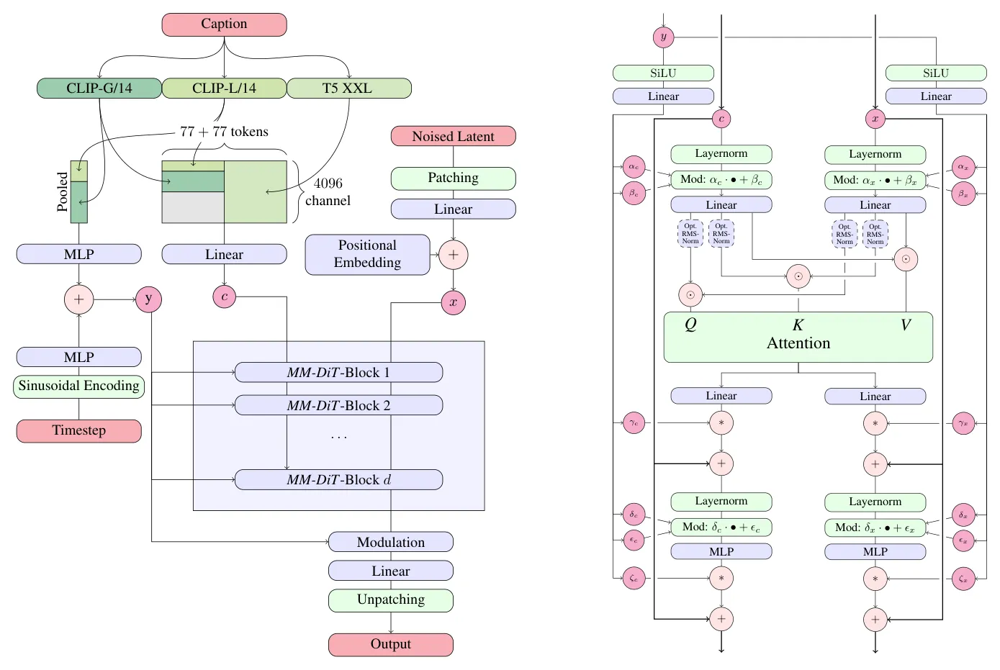
SD3 MM-DiT Figure 2 （arXiv 2403.03206）：Our model architecture. 左＝整体 pipeline（Caption→CLIP-G/CLIP-L/T5-XXL 三文本塔、Noised Latent→Patching、MM-DiT-Block×d）；右＝MM-DiT block 双流 结构（文本流 c 与图像流 x 各自独立权重、汇入联合 Attention 的 Q/K/V）。RMS-Norm for Q,K 可稳定训练。① 为什么能 work MM-DiT 把
A1 的"图像单向 attend 文本"升级成
双向联合注意力 ，关键在
文本表征也被精炼 ：A1 里文本 K,V 由外部 encoder 一次算好、整个去噪过程
冻结不变 ，图像只能被动"查"这串死文本；MM-DiT 把文图 token 拼成一条序列做 joint self-attention，
文本 token 也会被图像 attend、也逐层被更新 ——文本表征在去噪中被当前噪声图"反向精炼"，实测让
属性绑定 （哪个物体是红的/蓝的）与
图内文字拼写 显著变好。
一手证据（证其必要） ：SD3 原论文在同一配方下正面消融 DiT / CrossDiT / UViT /
MM-DiT ，MM-DiT 在 validation loss、CLIP score、FID
三项全胜 （与
A3 四注入实验同理，都在说"条件怎么进决定质量"）。
为何还要"双流" ：文本 token 与图像 patch 分布本就不同，全共享一套权重会互相将就 → 各模态
独立权重 (双流) 处理分布差异、
联合注意 负责信息交换，两者兼得。
② 工作原理是什么 两模态各自 AdaLN 调制(见
A3 )、各自投影出 Q,K,V（两套权重=双流），再把 Q/K/V
沿序列维拼接 后做一次 self-attention，最后切回各自部分：
Q = [Q_txt ; Q_img]，K = [K_txt ; K_img]，V = [V_txt ; V_img]； A = softmax(Q·Kᵀ/√d)·V ∈ ℝ^{(N_t+N_i)×d}，再 split 回 (N_t, N_i)MM-DiT 2403.03206
· 拼接后注意力矩阵是 (N_t+N_i)×(N_t+N_i) ，含四个块：txt→txt、img→img（各模态内），以及 txt→img、img→txt（两个跨模态块=双向交互的灵魂） ；· 全局条件(时间步 + CLIP-pooled 文本)只经 AdaLN 逐流调制，逐 token 文本靠 joint-attention 喂 ——这正是"AdaLN 全局 + MM-DiT 逐 token"的分工；· 各模态独立的 LN/QKV/MLP 权重 = "两个独立 transformer 只在 attention 处交汇"。
③ 怎么实现的 双流 + 联合注意 + 各自 AdaLN 的一个 block（伪代码，含 QK-Norm）；训练用 rectified flow 并配若干稳定性/编码器工程：
def mmdit_block(x_img, x_txt, c): # c=全局条件(时间步 + CLIP-pooled 文本)
hi = modulate(norm_i(x_img), *adaLN_img(c)) # 各自 AdaLN 调制（独立权重→双流）
ht = modulate(norm_t(x_txt), *adaLN_txt(c))
qi,ki,vi = to_qkv_img(hi).chunk(3, -1)
qt,kt,vt = to_qkv_txt(ht).chunk(3, -1)
qi,ki = rmsnorm(qi),rmsnorm(ki); qt,kt = rmsnorm(qt),rmsnorm(kt) # ★QK-Norm 稳住高分辨率
Q = cat([qt,qi],1); K = cat([kt,ki],1); V = cat([vt,vi],1) # ★拼接两模态
A = softmax(Q @ K.transpose(-1,-2)/sqrt(d)) @ V # 联合注意→双向互相 attend
at, ai = A.split([Nt, Ni], 1) # 切回文本/图像
x_txt = x_txt + out_txt(at); x_img = x_img + out_img(ai) # 各自残差 + MLP
return x_img, x_txt·
训练目标 ：rectified flow（回归"噪声→数据"直线速度场，见
§3.4 ），SD3 关键在
logit-normal 时间步采样 ——把训练信号偏置到轨迹
中段 (感知最难的噪声档)，正是这个 reweighting 让 RF 终于压过普通扩散。·
QK-Norm ：256²→1024² 微调时注意力 logit 爆炸、熵坍缩、bf16 发散 → 对两流的 Q,K 各加
RMSNorm （借鉴大 ViT 训练）压住 logit。·
三文本 encoder ：CLIP-L/14 + OpenCLIP-bigG/14 +
T5-XXL(4.7B) ；infer 可丢 T5 省显存（美学 win 50%、排版仅 38% → 生成文字建议保留 T5）。·
scaling ：15 blocks 450M → 38 blocks
8B ，validation loss 平滑下降；主模型用
两套 权重（三套仅微涨却更贵）。·
FLUX.1 （12B，
无正式论文，需核实 ）：双流 MM-DiT 块 + 单流块混合、用 RoPE。
④ 为什么这么实现（设计动机 + 权衡） ·
为何双向而非 A1 单向 ：让文本随图像迭代精炼，长 prompt 组合性/图内文字更好；
为何双流而非 A6 单流 ：保留模态特异权重、避免文图分布互相将就，又不失信息交换。三条路对比：
维度 A2 MM-DiT 双流 A1 Cross-attn A6 单流 early-fusion 信息流向 双向 (文↔图)单向(文→图) 双向 (文↔图)模态权重 各自独立(双流) 图/文各一套但文本冻结 完全共享一套 文本是否被精炼 是 (逐层更新)否(K,V 一次算好) 是 attention 复杂度 (N_t+N_i)² N_i×N_t(较省) (N_t+N_i)² 代表 SD3 / FLUX SD1.x / Imagen Chameleon / Fuyu
·
代价 ：文图 token 一起做 attention，计算随
(N_t+N_i)² 增长（比 A1 的 N_i×N_t 贵）；
参数量近翻倍 (两套 QKV/MLP)；高分辨率训练需 QK-Norm 兜稳定性。SD3 完整配方 =
A3(AdaLN 喂 pooled 文本/时间步) + A2(MM-DiT 喂逐 token 文本) 组合。
A6 Early-Fusion Token 拼接：Chameleon / Emu3 / Fuyu① 为什么能 work early-fusion 把图像也变成 token、与文本同处一条序列 ，从第一层起用同一个 Transformer、同一套 self-attention、同一个 AR next-token 目标 ——不分主/条件模态，完全对称。双向能力"白送"的根子：单条混合序列里，同一个 loss 靠 token 先后顺序自动训两个方向 ——文本前缀+图像 token 在后 = text→image（生成）；图像 token 前缀+文本在后 = image→text（理解）。self-attention 让任一后位 token attend 到所有 前位 token（不管哪个模态），跨模态依赖与文本内依赖用的是同一套机制 。本质：它直接建模联合分布 p(混合序列)=∏ p(t_i|t_<i)，两个方向只是从同一个联合里读出的条件。反例 ：若给图像单独 encoder/单独注意力流（如 A4 的独立 ViT、A2 的双流独立权重），就丢了"一个模型、双向、任意交错"的性质；且若不稳训（无 QK-Norm），共享 softmax 面对文本(离散)与图像(量化)迥异的熵 会发散（logit drift），大规模根本训不起来。
② 工作原理是什么 混合序列用图像分隔符 ⟨img⟩…⟨/img⟩ 包住图像 token，统一 next-token 目标。图像 token 两种来源：离散量化 （Chameleon/Emu3：VQ 编码器把图变成 codebook 索引，这些索引并入文本 BPE 词表 ，图像码就成了字面意义的"额外单词"）或连续投影 （Fuyu：patch 线性投影成连续向量直接入序列，不量化）。离散方案下，一个覆盖 |V|=词表+码本 的 softmax 同时预测下一个 token 是文字还是图像码 ——这就是"一个模型通吃理解+生成"的根源。
序列 = [ t₁ᵗˣᵗ,…, ⟨img⟩, c₁,…, c₁₀₂₄, ⟨/img⟩, t₃ᵗˣᵗ,… ] ； L = −Σ_i log p_θ( t_i | t_<i )Chameleon 2405.09818
③ 怎么实现的 图像先经 VQ 编码成离散码、与文本 id 拼成一条序列，单个 decoder 做 AR；稳训靠 QK-Norm：
# —— Chameleon 式 early-fusion（离散量化）——
img_codes = vqgan_encode(image) # 512×512 → 1024 个 codebook 索引（码本 8192）
seq = [*txt_ids, BOI, *img_codes, EOI, *more_txt_ids] # 图文同处一条序列
logits = decoder(embed(seq)) # 一个 decoder 做 AR：词 or 图像码 通吃
loss = cross_entropy(logits[:-1], seq[1:]) # 混合模态统一 next-token
# ★稳训关键 QK-Norm：Q/K 进 softmax 前 LayerNorm，压 logits 范数、防 logit drift
def attn(x):
q, k, v = to_qkv(x).chunk(3, -1)
q, k = ln_q(q), ln_k(k) # ← QK-Norm（Chameleon 核心）
return softmax(q @ k.transpose(-1,-2) / sqrt(d)) @ v数值与配方（已核实） ：·
Chameleon 图像 tokenizer：512×512 →
1024 离散 token，
码本 8192 ；新训 BPE 词表
65,536 （含 8192 图像码）。Chameleon-
7B/34B ，训练
9.2T token （2.1 epoch，约 Llama-2 2T 的 4.6×）。稳训：
QK-Norm （Q/K 进 softmax 前 LayerNorm 控 logit drift）+ Z-loss；34B 另做
LN 重排 （Swin-v2 式 norm 前置，界定 SwiGLU 的范数增长）。底座沿用 Llama-2（RMSNorm/SwiGLU/RoPE）。·
Emu3 ：文本/图/视频全离散 token、纯 next-token 一统（2409.18869）。·
Fuyu ：不量化、线性投 patch，A4×A6 混合（见
A4 ）。
④ 为什么这么实现（设计动机 + 对比 + 权衡） ·
为何离散量化（Chameleon/Emu3）而非连续投影（Fuyu） ：离散码是字面 token，一个 softmax 就能
采样生成图像 （真正统一生成）；连续投影更简单、无码本重建上限，但无法靠采样离散词表"生成"图 → Fuyu 偏理解。
·
为何要 early-fusion 而非 late-fusion（A4/A5） ：换来对称双向、单一架构通吃理解+生成、任意图文交错。
·
核心代价 ：训练不稳（须 QK-Norm/LN 重排/Z-loss）；量化
丢信息 （Chameleon 明说 tokenizer 重建富文本图弱 → OCR 受限）；图像 token 长（1024/图）拉长序列、注意力 O(N²)。
维度 离散量化（Chameleon/Emu3） 连续投影（Fuyu） 图像→token VQ 编码 → codebook 索引 patch 线性投影 → 连续向量 能否 AR 生成图像 能 （采样离散图像码）不能（无离散图像词表） 词表 文本 BPE + 图像码本（合并 65,536） 仅文本词表（图像走连续嵌入） 信息损失 / 稳定性 量化有损、须 QK-Norm 稳训 无量化损、实现更简，偏理解
A4 投影进 LLM：LLaVA / MiniGPT-4 / Frozen / Fuyu（NeurIPS23 等）① 为什么能 work 把视觉特征投进 LLM 就能"看图说话"，靠
三件事叠加 ：(a) 视觉 encoder（CLIP/SigLIP ViT）已被对比学习
对齐到语言语义空间 （地基见
§2 ），patch 特征 Z_v 天然落在"词所指概念"附近；(b) Transformer 的 self-attention
只认嵌入向量、不认它从查表还是投影来 ——projector 只需把 Z_v
换基 到 LLM 词嵌入子空间、量纲对齐，视觉就成了可被 LLM 解码的"软 token（soft prompt）"；(c) 语言 next-token CE 的梯度
反传穿过 projector ，强制视觉 token 只携带"能被语言解码"的语义。
反例 ：用未对齐的随机 ViT、或让 projector 停在随机初始化，LLM 看到的前缀就是噪声、无法 grounding；密集 OCR / 精确计数常翻车，正因这些语义无法从 CLIP 特征稳定解码（
§4 GenCeption 证据）。
② 工作原理是什么 视觉 encoder 产 patch 特征 Z_v，投影器 Proj_W 映到 LLM 词嵌入维 d_llm 得"视觉 token" H_v，与文本 token 拼成一条序列做自回归，训练目标是只对答案 token 的 next-token 交叉熵。关键直觉：LLM 正常输入是 inputs_embeds = Embed(ids)，这里对图像槽位跳过 embedding 查表 、直接塞连续的 H_v——因为注意力作用在嵌入上，只要 H_v 落在同一个 d_llm 空间、范数量纲相近，它就被当"普通 token"处理。这正是线性/MLP 换基就够用 的原因。
Z_v = ViT(image) ∈ ℝ^(n×d_v) ； H_v = Proj_W(Z_v) ∈ ℝ^(n×d_llm)LLaVA 2304.08485
· 数值实例（LLaVA-1.5） ：336×336 图 → CLIP ViT-L/14 出 24×24=576 个 patch，d_v=1024；projector 1024→d_llm（Vicuna-13B d_llm=5120）⇒ H_v ∈ ℝ^(576×5120)。一张图吃掉 576 个上下文 token 。· LLaVA-1.0（224px）→ 16×16=256 token。· 自回归分解 p(answer|image,question)=∏_i p(x_i|H_v,question,x_<i)，梯度回流至 W（及阶段二的 LLM）。
③ 怎么实现的 projector 极简（LLaVA-1.5=2 层 MLP+GELU，1.0=单线性），Fuyu 连独立 encoder 都省掉、直接线性投 patch 像素进 decoder 第一层：
class LlavaProjector(nn.Module): # LLaVA-1.5 = 2 层 MLP（1.0 是单线性层）
def __init__(self, d_vision, d_llm):
self.proj = nn.Sequential(nn.Linear(d_vision, d_llm), nn.GELU(),
nn.Linear(d_llm, d_llm))
def forward(self, Z_v): return self.proj(Z_v) # patch特征 → LLM 词嵌入空间的"软token"
def build_inputs(image, prompt_ids, vit, projector, llm):
H_v = projector(vit(image)) # ★注入点：投到 LLM 词嵌入空间
H_txt = llm.embed_tokens(prompt_ids)
return replace_image_placeholder(H_txt, H_v) # 视觉token插到 <image> 占位 → 喂 LLM 做 AR
# —— Fuyu-8B：无独立视觉 encoder，patch 原始像素线性投影直入 decoder ——
self.vision_embed_tokens = nn.Linear(patch*patch*channels, hidden) # 展平 patch → 隐维
# 图像 token 与文本同序列（raster-scan + image-newline 符），去图像专用位置编码 → 任意分辨率训练配方与数值（均已核实） ：· LLaVA-1.5 两阶段——① 对齐：558K LAION-CC-SBU，只训 MLP connector （ViT+LLM 冻结），bs=256 / lr=1e-3 / 1 epoch / ~5.5h（13B, 8×A100-80G）；② 指令微调：665K 混合（158K LLaVA 对话 + VQAv2/GQA/OCR-VQA…），训 connector+LLM（ViT 仍冻结），bs=128 / lr=2e-5 / ~20h。· LLaVA-1.0 ：595K CC3M(阶段一) / 158K GPT-4 生成(阶段二)，单线性 projector，256 token。· MiniGPT-4 ：阶段一 ~5M 图文对齐、阶段二仅 3,500 条高质量对话，只训一个线性层 （冻结 EVA-ViT+Q-Former+Vicuna）。· Frozen (NeurIPS21) 首次把视觉→连续 embedding 前缀喂冻结 LM，跑通 few-shot——LLaVA/MiniGPT-4 的直系祖先。
④ 为什么这么实现（设计动机 + 对比 + 权衡） ·
为何"投影"而非"cross-attn 注入" ：projector 参数最少（一个 MLP），能
复用冻结的强 encoder + 强 LLM ，工程门槛最低 → 当前开源 VLM 主流；Flamingo 式插层（A5）要新训一堆交错层。
·
为何两阶段 ：阶段一先廉价对齐 projector、不动 LLM（不破坏语言能力）；阶段二才教指令遵循。跳过阶段一直接端到端小数据训，对齐不稳。
·
为何 1.0 线性 → 1.5 换 MLP ：MLP 换基更有表达力，实测多榜显著提升。
·
核心代价 ：全 patch 直入 → 视觉 token 多（576/图），长图/多图/视频
撑爆上下文 （注意力 O(N²)）——这正是 A5（Q-Former/Resampler）要解决的。
维度 A4 全 patch 投影（LLaVA/Fuyu） A5 定长压缩（Q-Former/Resampler） 视觉 token 数 = patch 数（576，随分辨率涨） = query 数（32/64，固定） 细节保留 高（全 patch，利于精细/OCR） 受压缩瓶颈，可能丢细粒度 多图/视频/长上下文 贵（token 随图数线性膨胀） 友好（定长，与输入长度无关） 新增可训模块 仅一个 MLP（最省） Q-Former/Resampler（较重、训练更复杂）
A5 Resampler / Q-Former：BLIP-2 / Flamingo（ICML23/NeurIPS22）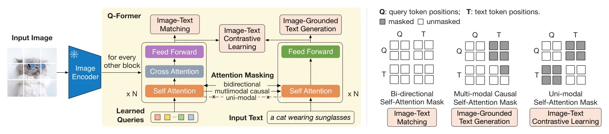
BLIP-2 Figure 2 （arXiv 2301.12597）：(Left) Q-Former 结构与第一阶段视觉-语言表征学习——三目标 ITC/ITM/ITG 迫使 learnable queries 抽取与文本最相关的视觉表征；(Right) 每个目标的 self-attention masking（Bi-directional / Multi-modal Causal / Uni-modal）控制 query-text 交互。① 为什么能 work A4 把全部 patch 塞进 LLM，token 太多、多图/视频撑爆上下文。A5 的地基是 Perceiver 的非对称 cross-attention ：一组固定数量、可学习的 query 作 Q 去 attend 变长视觉（K,V），把任意长输入蒸馏进定长 bottleneck （复杂度 O(N²)→O(N·M), M≪N）。为什么"压缩不崩"？因为 query 不是平均池化，而是内容自适应 地"挑"信息——softmax(QKᵀ) 让每个 query 学会聚焦一类语义（物体/属性/关系）；BLIP-2 更用 ITC/ITM/ITG 三目标 逼 query 只保留"与文本最相关"的视觉信息（信息瓶颈原理）。反例 ：把 query 换成固定的均值/最大池化，信息按位置平摊、无法按语义取舍，细粒度对齐立刻退化；Flamingo 消融也证明 Resampler > 朴素 Transformer > MLP。
② 工作原理是什么 设 k 个可学习 query Q∈ℝ^(k×d)、视觉特征 X∈ℝ^(N×d_v)（N 变长）。cross-attention：A=softmax( (Q W_q)(X W_k)ᵀ/√d )，输出 O=A·(X W_v)∈ℝ^(k×d)——输出 token 数恒等于 query 数 k，与 N 无关 ，这就是"变长压定长"。BLIP-2 的 Q-Former 更进一步：query 之间还做 self-attention、并按任务切换 attention mask 与文本交互——ITC 用单模态 mask（禁 query 看文本，防泄漏）、ITM 用双向 mask（细粒度匹配）、ITG 用因果 mask（逼 query 保住够生成的视觉信息）；一套结构同时当对齐器与压缩器。Flamingo 则把 Resampler 的定长 token 作 K,V，用新插入的 gated cross-attn 喂进冻结 LM。
O = softmax( (Q W_q)(X W_k)ᵀ / √d ) · (X W_v) ， Q∈ℝ^(k×d) 可学习，X∈ℝ^(N×d_v)BLIP-2 2301.12597 / Flamingo 2204.14198
③ 怎么实现的 Q-Former / Resampler 的共同骨架就是"可学习 query 作 Q、视觉作 K,V"的一层 cross-attention：
class QueryResampler(nn.Module): # BLIP-2 Q-Former / Flamingo Resampler 共同骨架
def __init__(self, n_query, d, d_vision):
self.query = nn.Parameter(torch.randn(n_query, d)) # ★可学习 query（如 32/64 个）
self.to_q = nn.Linear(d, d); self.to_k = nn.Linear(d_vision, d); self.to_v = nn.Linear(d_vision, d)
def forward(self, vision_feats): # [B, N, d_vision]，N 可变长/很大
q = self.to_q(self.query); k = self.to_k(vision_feats); v = self.to_v(vision_feats)
attn = softmax(q @ k.transpose(-1,-2) * scale) # query 从视觉里"挑"信息
return ffn(attn @ v) # [B, n_query, d] ← 定长视觉token，喂 LLM数值与配方（已核实） ：· BLIP-2 Q-Former ：k=32 query、d=768，由 BERT-base 初始化 （cross-attn 层随机初始化、每隔一层插一个），共 188M 参数。输出 Z 尺寸 32×768 ≪ 冻结视觉特征 257×1024（ViT-L/14）——瓶颈逼 query 抽"与文本最相关"信息。两阶段：① 冻结 ViT，query↔文本联合训 ITC+ITM+ITG ；② 冻结 LLM（OPT/FlanT5），query 经线性层作前缀做语言生成。· Flamingo ：Resampler 出 64 token；GATED XATTN-DENSE 插进冻结 Chinchilla （1.4B/7B/70B → Flamingo-3B/9B/80B）层间，输出乘 tanh(α)、α 初始化为 0 ⇒ 训练初等价原 LM，门再渐开（保护预训练权重）。
④ 为什么这么实现（设计动机 + 对比 + 权衡） ·
为何 learnable query 而非池化 ：query 是内容自适应的可微"提问器"，能按语义取舍并被下游 loss 端到端优化；池化固定、丢语义结构。
·
为何 BLIP-2 要三目标而非只对齐 ：ITC 学粗对齐、ITM 学细粒度匹配（难负例挖掘）、ITG 逼 query 保住"够生成文本"的完整视觉信息——单靠 ITC 压缩会丢生成所需细节。
·
为何 Flamingo 用 zero-init 门 ：把新模块"安全"接进已训好的 LM，避免随机 cross-attn 一上来毁掉语言能力（与 A3 的 adaLN-Zero 同思想）。
·
代价 ：多一个待训模块、Q-Former 三目标训练较复杂；定长压缩
可能丢细粒度 （密集 OCR 弱于 A4 全 patch）。
维度 BLIP-2 Q-Former Flamingo Perceiver Resampler 定长 token 数 32（query） 64（latent） 接入 LLM 方式 query→线性层→前缀 拼接 gated cross-attn 插进冻结 LM 层间训练目标 阶段一 ITC+ITM+ITG，阶段二语言 loss 图文交错 next-token（LM 冻结） 额外能力 兼做图文对齐（可检索） few-shot in-context、多图/视频交错
A1 Cross-Attention 注入：Stable Diffusion / Imagen（CVPR22/NeurIPS22）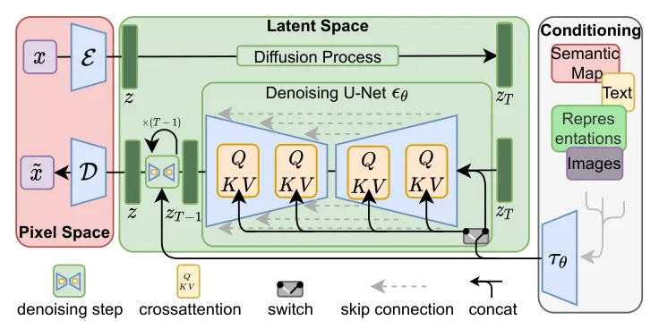
LDM/SD Figure 3 （arXiv 2112.10752）：We condition LDMs either via concatenation or by a more general cross-attention mechanism. 图中 Denoising U-Net εθ 内的 Q/K/V crossattention 块即文本注入点，右侧 Conditioning 塔经 τθ 编码语义图/文本/表征/图像后作 K,V。① 为什么能 work 文本能逐区域控制图像，根子是
两件事叠加 ：(a) 文本经 encoder（SD 用 CLIP-text、Imagen 用冻结 T5-XXL）被编码进一个
与视觉语义对齐 的向量序列（对齐地基见
A0 ）；(b) cross-attention 的 softmax(QKᵀ) 让图像
每个空间位置 去"查询"这串文本 token、得到一组归一化权重 =「我这块像素该听哪些词」。海量图文对上，denoising loss 的梯度把这套「词↔区域」对应
蒸馏进 W_Q/W_K/W_V ，文本于是获得改写局部内容的能力。
反例（证其必要） ：拿掉 cross-attn 的无条件 U-Net 只会生成"某种图"、文本无处注入，无法生成"符合这句话的图"——交互能力正来自这层注意力。
② 工作原理是什么 LDM 先用 VAE 把像素压到 latent z（感知压缩省算力），在 latent 上做 U-Net 去噪；文本通过在 U-Net 每个（部分）分辨率块插入的 cross-attention 注入：
Attention(Q,K,V) = softmax(QKᵀ/√d)·V ； Q = W_Q·φ(z_t)〔图像 latent，逐空间位置〕， K = W_K·τ(y)、V = W_V·τ(y)〔文本序列 embedding〕LDM 2112.10752
· Q 来自图像当前层特征（flatten 成 token），K/V 来自文本 encoder τ(y)；· softmax 沿"所有文本 token"归一化 → 每个图像位置对文本 V 加权求和 = 吸收的语义；· 多头让不同 head 关注不同语义面（颜色/物体/关系）；· 与图像自注意力 attn1 串联成 BasicTransformerBlock（自注意管图像内部一致、交叉注意管"听文本"）。
③ 怎么实现的 文本 encoder 出的序列 embedding 作 encoder_hidden_states 透传进 UNet、被每个 cross-attn 当 K,V；ε-prediction 的 MSE 梯度反传穿过所有 cross-attn（及文本 encoder，若不冻结），把"文本→去噪方向"学出：
# diffusers UNet2DConditionModel 的 encoder_hidden_states 注入（训练侧全链路）
latents = vae.encode(pixel_values).latent_dist.sample() * 0.18215
noise = torch.randn_like(latents)
t = torch.randint(0, 1000, (bsz,))
noisy = scheduler.add_noise(latents, noise, t) # z_t = √ᾱ_t·z_0 + √(1-ᾱ_t)·ε
ids = tokenizer(captions, max_length=77, ...).input_ids
encoder_hidden_states = text_encoder(ids)[0] # [B,77,768] ← K,V 来源
noise_pred = unet(noisy, t,
encoder_hidden_states=encoder_hidden_states).sample # ★注入点 → 每个 cross-attn 的 K,V
loss = F.mse_loss(noise_pred, noise) # ε-prediction；v-pred 则 target 换成 v训练目标 L_LDM = E_{z_0,y,ε,t} ‖ ε − ε_θ(z_t, t, τ_θ(y)) ‖²（第三个入参即文本 → 学条件 score ∇log p(z_t|y)）infer 侧 CFG/采样见 §3
④ 为什么这么实现（设计动机 + 权衡） ·
为何用 cross-attn 而非 concat 文本进输入 ：concat 需定长、且文图混在同一自注意里难对齐；cross-attn 天然支持
变长文本 、每层反复回看文本、区域级对齐强（DiT 实测 in-context/concat 注入 FID 最差，见
A3 ）。
·
为何文本作 K,V、图像作 Q ：要生成的"主模态"是图像，应由图像主动查询文本条件；反过来就成了"图像改写文本"（那是 image→text，非生成）。
·
为何每个 block 都插 ：让文本在各分辨率/各去噪深度持续作用，粗结构与细纹理都受控。
·
为何用外部预训练文本 encoder（尤其 Imagen 冻结 T5-XXL） ：纯文本大模型比 CLIP-text 更懂长句/组合；Imagen 实证
放大文本 encoder 比放大扩散模型更提升对齐 ——语言侧表征是瓶颈。
·
代价 ：单向（文→图不反哺，故 SD3 改双向 MM-DiT，见
A2 ）；每 block +约 15% flops；依赖外部 text encoder。
A3 ⭐ AdaLN / AdaLN-Zero 调制：DiT（ICCV23）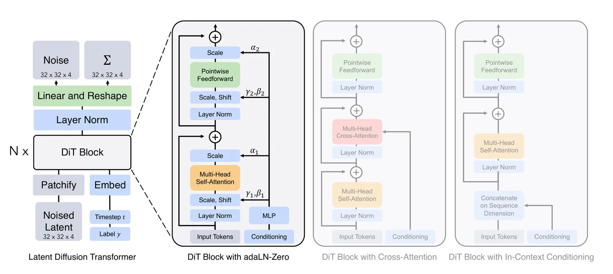
DiT Figure 3 （arXiv 2212.09748）：左＝DiT 整体（Noised Latent→Patchify→N× DiT Block→Linear）；右＝block 变体图 adaLN-Zero / Cross-Attention / In-Context （对应 DiT 原文 §3 讨论的 4 种 conditioning，adaLN 与 adaLN-Zero 合并展示）。原文结论：Adaptive layer norm works best。① 为什么能 work 两点叠加。(a) 形状匹配 ：DiT 要注入的条件（时间步 t、类别/pooled 文本）本质是一个全局向量 ，对图像的作用是"全局风格/强度"而非"逐区域内容"——用 LayerNorm 的 scale/shift（FiLM 式逐通道仿射） 承载它，比硬塞进 attention 更贴合"全局标量"本性，且几乎不加 flops。(b) 恒等初始化稳训练 ：AdaLN-Zero 把残差门 α 零初始化 → 每个 block 训练初是恒等映射 ，深层 Transformer ≈ 恒等、梯度干净，大模型/大 batch 不易崩；随训练 α/γ/β 才"长出来"、条件影响平滑增强（同 ResNet zero-γ / Fixup / ReZero 的 identity-init 思想）。一手证据（证其必要） ：DiT 原论文四注入对照中，adaLN-Zero 比 vanilla adaLN 显著更好 （去掉 zero-init 就变差 → 初始化是关键），并比 cross-attn/in-context 的 FID 更低、flops 最省；400K 步时其 FID 约为 in-context 的一半 。
② 工作原理是什么 标准 LayerNorm 的仿射 γ,β 是固定 学出来的；AdaLN 改成从条件 c 回归 ：γ(c),β(c)=MLP(c)。DiT 每个 block 回归 6 组 参数——注意力与 MLP 各一套 (shift, scale, 残差门 gate)：
modulate(x, shift, scale) = x·(1 + scale) + shift ； x ← x + α₁(c)·Attn(modulate(LN(x), β₁, γ₁)) ； x ← x + α₂(c)·MLP(modulate(LN(x), β₂, γ₂))DiT 2212.09748
· 为何 6 组 ：attn 前的 (shift₁,scale₁)、attn 残差门 α₁、mlp 前的 (shift₂,scale₂)、mlp 残差门 α₂ —— 共 6×hidden，由 SiLU→Linear(hidden, 6·hidden) 一次回归；· "Zero"如何得到恒等 ：把回归这 6 组的最后一层权重/偏置全零初始化 → 初始 α=scale=shift=0 → modulate 输出 = x·1+0 = x，且残差门 α=0 使残差支路输出为 0 → x←x（恒等）；· AdaLN 不用注意力 ，条件只变成逐通道仿射系数去缩放/平移激活并门控残差。
③ 怎么实现的 官方 DiT block 的 modulate 与 adaLN-Zero 零初始化（逐行）；配 DiT-XL/2 实测数值：
def modulate(x, shift, scale): return x * (1 + scale) + shift # ★AdaLN 核心
class DiTBlock(nn.Module):
def forward(self, x, c): # x:[B,N,D]图像token; c:[B,D]条件(时间步+类别/文本)
shift1,scale1,gate1, shift2,scale2,gate2 = self.adaLN_modulation(c).chunk(6, 1)
x = x + gate1 * self.attn(modulate(self.norm1(x), shift1, scale1))
x = x + gate2 * self.mlp (modulate(self.norm2(x), shift2, scale2))
return x
# ★AdaLN-Zero: 回归调制参数的最后一层零初始化 → 训练初每 block 是恒等映射
nn.init.constant_(block.adaLN_modulation[-1].weight, 0)
nn.init.constant_(block.adaLN_modulation[-1].bias, 0)· DiT-XL/2 ：depth 28、hidden 1152、16 头、patch 2（32×32 latent → 256 token），675M 参数、118.6 Gflops ；ImageNet 256² 用 CFG=1.5 训 7M 步 FID-50K 2.27 （当年 SOTA，把 LDM 的 3.60 压下来）。· 算力对比 ：DiT-XL/2 118.6 Gflops vs LDM-4 103.6、ADM 1120、ADM-U 742——同级质量下 transformer backbone 并不比 U-Net 贵。· scaling ：DiT-S(33M)→B(130M)→L(458M)→XL(675M)，Gflops 越高 FID 越低，遵循与 LLM 类似的 scaling law。
④ 为什么这么实现（设计动机 + 权衡） ·
DiT 原论文"四种条件注入"对照实验 （"how condition enters 决定成败"的最强一手证据）：
注入方式 做法 Gflops (DiT-XL/2) 恒等初始化 FID In-context 把 t,c 当额外 token 拼进序列 119.4 否 基线（最差） Cross-attention 条件作独立序列，图像 cross-attend 137.6 (+15%) 否 中等 AdaLN(vanilla) 从 t+c 回归 LN 的 scale/shift 118.6 (最省) 否 好 AdaLN-Zero AdaLN + 残差 gate + 零初始化 118.6 (最省) 是 最好 （约 in-context 的一半）
·
为何选 AdaLN-Zero ：最省算力、FID 最低、训练最稳（恒等初始化），三者兼得。
·
局限与代价 ：AdaLN 只能注入
一个全局向量 （pooled 文本/时间步/类别），
逐 token 文本对齐弱 ——所以 SD3 在 AdaLN 之外还要
A2 MM-DiT 的 joint-attention 来喂逐 token 文本。被 SD3 / PixArt-α / Sora / Wan 广泛沿用（见
§7 ）。
A0 对比对齐地基：CLIP / ALIGN / SigLIP（ICML21/ICCV23）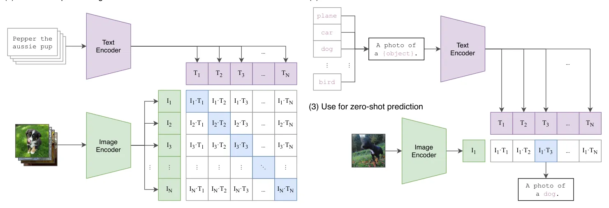
CLIP Figure 1 （arXiv 2103.00020）：Summary of our approach. While standard image models jointly train an image feature extractor and a linear classifier, CLIP jointly trains an image encoder and a text encoder to predict the correct pairings of a batch of (image, text) training examples . At test time the learned text encoder synthesizes a zero-shot linear classifier by embedding the names/descriptions of the target dataset's classes.① 为什么能 work 对比学习不"注入"、而是把两个模态搬进
同一个可比较的空间 。本质是：InfoNCE 是配对图文
互信息 I(image;text) 的变分下界 ——van den Oord(2018, CPC) 证明
I(image;text) ≥ log N − L_InfoNCE，且 N（batch 内负样本数）越大界越紧。最小化对比 loss ⇔ 最大化"图文都指向的那部分语义"的互信息，网络被迫丢弃与文本无关的像素噪声、只保留"猫/红色/在草地上"这类跨模态共有概念。
反例（证其必要） ：若两塔各自独立训练、无共享对比目标，两个嵌入空间的坐标轴是
任意且不对齐 的，"图向量·文向量"的余弦相似度
没有意义 ；换成传统监督分类则被锁死在固定标签集、无法开放词表 zero-shot。正因有了这个已对齐的球面，下游
A1 cross-attn、
A4 projection 才是在"同一语义空间里搬运信息"——没有 A0 地基，注入就是鸡同鸭讲。
② 工作原理是什么 双塔各自编码 → L2 归一化到单位球 → 可学习温度 τ 缩放 → 相似度矩阵 → 对称 InfoNCE（双向交叉熵） 。对含 N 个真实配对的 batch，把对角线当正例、其余 N−1 当负例，"给图找对的文"与"给文找对的图"两方向各算一次交叉熵再平均：
I_i = f_I(img_i)/‖f_I(img_i)‖，T_j = f_T(txt_j)/‖f_T(txt_j)‖，s_ij = I_i·T_j ； L_CLIP = ½( L_{i→t} + L_{t→i} )，其中 L_{i→t} = −(1/N)Σ_i log[ exp(s_ii/τ) / Σ_j exp(s_ij/τ) ]CLIP 2103.00020
互信息下界：I(image;text) ≥ log N − L_InfoNCE（N 越大界越紧）→ 最小化 loss = 最大化配对互信息CPC 1807.03748
· 为何 L2 归一化 ：把点积变成余弦 （值域 [−1,1]），只比方向不比模长，训练更稳；· 温度 τ ：控制 softmax 锐度——τ 小则分布尖锐、更"较真"于最近负例；· 为何对称 ：image→text 与 text→image 都要对齐，这份双向 正是后续图↔文两方向都能 work 的根；· 全程无任何跨模态注意力 ，交互只发生在最后 I_e @ T_e.T 一个点积。
③ 怎么实现的 图文交互只在最后 I_e @ T_e.T 的点积 ——"点积要大"的约束逼两塔把同语义图文放到球面邻近处。原论文 Figure 3 的 numpy 风格与关键超参：
# CLIP 对称 InfoNCE（原论文 Figure 3 numpy 风格）
I_e = l2_normalize(image_encoder(I) @ W_i) # [n, d] 投到共享空间并归一化
T_e = l2_normalize(text_encoder(T) @ W_t) # [n, d]
logits = (I_e @ T_e.T) * exp(t) # 余弦 * 可学习温度 exp(t)；初始 t=log(1/0.07)
labels = arange(n) # 对角线是正例(i图配i文)
loss = (cross_entropy(logits, labels, axis=0) # 给"文"找对的"图"
+ cross_entropy(logits, labels, axis=1))/2 # 给"图"找对的"文" ★对称SigLIP 变体：L = −(1/N)Σ_i Σ_j log σ( z_ij·(t·s_ij + b) )，z_ij = +1(i=j) / −1(i≠j)，σ=sigmoid，逐对 无需全局归一化SigLIP 2303.15343
· CLIP 实测 ：batch 32,768 （超大 batch = 更多负例 → MI 下界更紧）、τ 初始 0.07 并 clamp 使 logit 缩放 ≤ 100 （原文："必须，否则训练不稳"）、400M 图文对训 32 epoch；ViT-L/14@336px zero-shot ImageNet 76.2% top-1 （追平全监督 ResNet-50、95% top-5），12 天 256×V100。· SigLIP ：sigmoid 免全局归一化 → 与 batch 解耦，小 batch 更优、32k 即饱和 （softmax 需 98k，307k 反伤两者）；SigLiT-g/14 两天 4×TPUv4 达 84.5% zero-shot 。· ALIGN (2102.05918)：18 亿 noisy alt-text 双塔，证"数据可脏但要大"。
④ 为什么这么实现（设计动机 + 权衡） ·
为何用对比而非生成来对齐 ：对齐只需"配对相似度 > 非配对"，对比 loss 直接优化该序关系、无需重建像素，极省算力且天然给出可检索的度量空间。
·
为何超大 batch ：InfoNCE 下界 I ≥ log N − L 随 N 收紧，负例越多"较真"越强——这就是 CLIP 用 32k、并把相似度矩阵跨 GPU 分片的动机。
·
softmax vs sigmoid vs 监督分类 （三条对齐路线的权衡）：
方案 归一化 batch 依赖 开放词表 最优 batch / 代表数值 CLIP softmax InfoNCE 全 batch 全局归一化 强（需大 batch 多负例） 是 32k；ViT-L/14@336 ZS 76.2% SigLIP sigmoid 逐对，无全局归一化 弱（与 batch 解耦） 是 32k 即饱和；SigLiT 84.5% 传统监督分类 softmax over 固定类 无 否 （锁死标签集）— 不能 zero-shot
·
接口价值 ：CLIP/SigLIP
视觉塔 是几乎所有 VLM（LLaVA/BLIP-2/MiniGPT-4）的默认"眼睛"，CLIP
文本塔 是 SD1.x/SDXL 的默认文本 encoder，SD3 更同时用 CLIP-L + bigG + T5（见
A2 ）。
·
代价 ：对齐偏
粗粒度 （image-level 非 region-level）、本身
不能生成 （只提供表征地基）、依赖海量弱标注（ALIGN 18 亿对为证）。
目标 四种训练目标 → 让谁影响谁
训练目标 公式核心 让谁影响谁 条件怎么进（机制） 代表 Diffusion denoising ‖ε − ε_θ(z_t,t,c)‖² text→image A1 cross-attn / A3 adaLN SD、Imagen、DiT Rectified flow ‖v_θ(x_t,t,c) − (x_1−x_0)‖² text→image A2 joint-attn + A3 adaLN SD3、FLUX AR next-token −Σ log p(t_i | t_<i) 双向 （看序列顺序）A4 projection / A6 early-fusion LLaVA、Chameleon、Emu3 Contrastive 对称 InfoNCE / sigmoid 对称对齐 A0 双塔（+A5 Q-Former ITC） CLIP、ALIGN、SigLIP
本节 = 跨机制的「共性总纲」 ：各机制自身的「① 为什么能 work」已在
§1 /
§3 /
§4 /
§6 逐条展开；此处抽象出四条共通支柱，回答"为什么这类机制
普遍 成立"——是各机制 ① 的上位归纳，非重复。
把"为什么训练能让语言↔图像交互成立"拆成四个互相支撑的机制支柱 。核心论断：形态各异的模型殊途同归，因为它们是同一枚硬币（条件建模）的不同铸法 。
支柱一：共享表征空间（对齐让"跨模态可比较"） 对比预训练（CLIP/SigLIP）把图文映到同一语义流形 ，配对样本互信息最大化（InfoNCE 是 I(img;txt) 的下界）。一旦两模态在同一空间可比较，"文本定位图像区域""图像检索文本"就有几何基础。后续 cross-attn/projection 本质都在这个已对齐空间 里搬运信息——没有地基，注入的信息就是"鸡同鸭讲"。
支柱二：注意力 = 可微的软对齐（学出"词↔区域"对应） cross-/joint-/self-attention 的 softmax 权重，本质是为每个 Query 在另一模态 token 上算一组归一化权重。训练中它们自发收敛到语义对应 （"dog"注意力聚到狗的像素、图像区域 attend 到描述它的词）。这是"文本精确控制局部""图像被逐词描述"的可学习机制，且全程可微 ，能被生成/语言 loss 端到端优化。
支柱三：大规模图文对（把共现统计蒸馏进权重） LAION-5B / JFT / 十亿级 alt-text 提供开放世界的图文共现统计 。SGD 在 denoising/AR/contrastive loss 上迭代 = 把"什么文字通常配什么像素"压进权重。规模是必要条件：Imagen 发现"放大文本 encoder 比放大图像模型更提升对齐"，CLIP/ALIGN 证明数据规模压过清洗质量 ——大数据 + 简单目标 > 精巧结构 + 小数据。
支柱四：条件建模本质（架构只决定"条件怎么进"） 所有机制在做同一件事——估计条件/联合分布：p(image|text)（生成）、p(text|image)（理解）、或对齐 p(image,text)。架构 A0–A6 的全部差异只在"条件以什么结构进入前向" ，而驱动学习的都是"最大化条件似然/互信息"这同一原理。这解释了为何形态各异的模型能殊途同归。
训练 → infer 的桥 ：训练把"跨模态条件依赖"写进权重后，
infer 只是把它展开 ——diffusion/flow 反向积分（+CFG 放大文本方向，
§3 ）、VLM 自回归解码（
§4 ）。"为什么 infer 有此能力" = 训练目标的直接兑现（完整论证见
§5 ）。
总表 7 类融合机制完整对比（核心交付物）
机制类 代表模型（arXiv） 条件如何进入 训练目标 流向 优 / 缺 A2 双流联合注意力 🥇SD3/MM-DiT(2403.03206)、FLUX(需核实) 文图 token 拼接 joint self-attn（独立权重） rectified flow 双向 +双向/scaling好/组合性强 / −序列长、实现复杂 A6 Early-fusion 🔥Chameleon(2405.09818)、Emu3(2409.18869)、Fuyu 图像量化/投影成 token，与文本同序列 self-attn AR next-token（混合） 双向对称 +真正对称/架构统一/任意交错 / −训练不稳(需QK-Norm)、量化丢信息 A4 Projection LLaVA(2304.08485)、MiniGPT-4(2304.10592)、Frozen(2106.13884)、Fuyu 视觉特征 linear/MLP 投进 LLM 空间当软 token AR next-token img→text +极简/参数少/复用冻结模块/开源主流 / −视觉token多占上下文 A5 Resampler/Q-Former BLIP-2(2301.12597)、Flamingo(2204.14198)、Perceiver(2103.03206) learnable query cross-attend 视觉压定长 ITC/ITM/ITG + 语言 img→text +视觉token定长少/多图视频友好 / −多一模块、压缩丢细节 A1 Cross-attn LDM/SD(2112.10752)、Imagen(2205.11487) 文本作 K,V，图像 latent 作 Q diffusion denoising text→img +灵活/变长/区域对齐强/事实标准 / −单向、+15% flops A3 AdaLN-Zero DiT(2212.09748)、PixArt-α、SD3(pooled) 条件→回归 LN scale/shift/gate，零初始化 diffusion/flow 全局→img +flops最省/最稳/易scale / −只注全局向量，常配 A1/A2 A0 对比对齐 （地基）CLIP(2103.00020)、ALIGN(2102.05918)、SigLIP(2303.15343) 双塔共享空间点积对齐（不注入） 对称 InfoNCE/sigmoid 对称 +zero-shot/通用/地基 / −不能生成、偏粗
组合是常态 ：SD3 = A3(AdaLN pooled) + A2(MM-DiT 逐 token)；Flamingo = A5(Resampler) + A1(gated cross-attn)；MiniGPT-4 = A5(Q-Former) + A4(线性投影)；Fuyu = A4(线性投影) × A6(同序列)。
按 Best First：CFG（核心控制机制）· flow-matching（SD3/FLUX SOTA）· AR 解码（VAR NeurIPS24 Best）· DDPM/DDIM（采样基础）· Classifier Guidance（前 CFG 历史对比） 。子编号 3.x 为类型 ID，非先后。
统一视角：infer = 训练的"时间反演" 。三范式在 infer 时都是把一个简单先验（高斯噪声 / 起始 token）逐步变换为数据 ，条件 c（文本 embedding）在每一步注入、偏置这个变换的方向。CFG 则是"把这种偏置放大"的通用旋钮 。
3.2 ⭐ Classifier-Free Guidance（核心：文本如何"控制"图像）CFG（Ho & Salimans, NeurIPS 2021 WS, arXiv 2207.12598）—— 文本→图像的事实标准控制机制。
① 为什么能 work（隐式分类器完整推导） 文本之所以能从"弱条件"升级为"强控制"，核心是 CFG 在采样每步沿一个隐式分类器的梯度额外前进 。推导四步 ：贝叶斯 ：p(c|x) ∝ p(x|c)·p(c)/p(x) ⇒ log p(c|x) = log p(x|c) − log p(x) + const。取梯度 ：∇_x log p(c|x) = ∇_x log p(x|c) − ∇_x log p(x)。score ↔ ε ：∇_x log p_t(x|c) = −ε_θ(x,t,c)/√(1−ᾱ_t)，∇_x log p_t(x) = −ε_θ(x,t,∅)/√(1−ᾱ_t)。代入 ：∇_x log p(c|x) ∝ −(ε_cond − ε_uncond) ⇒ 方向 (ε_cond − ε_uncond) 正是"更像文本 c" 。再沿 ∇log p(c|x) 多走 (s−1) 倍 ，等价于从被锐化的分布 p(x|c)^s·p(x)^{1−s} 采样——增大条件似然、压低无条件似然。反例 ：s=1 时无外推，模型对文本只做"轻微 bias"、常出"大致相关却贴不紧"的图；去掉 uncond 分支则根本没有可放大的方向。
② 工作原理是什么（两惯例 + 等价证明） 训练用 condition dropout 让同一网络 既会条件 ε_cond 又会无条件 ε_uncond；采样把二者线性外推。业界两种写法完全等价 ：ε_uncond + s·(ε_cond−ε_uncond) = (1−s)·ε_uncond + s·ε_cond；令 s=1+w 即得原文 (1+w)·ε_cond − w·ε_uncond ⇒ s = 1 + w （s=1 / w=0 为无引导 = 纯条件）。
训练：以 p_uncond=0.1 把条件置空 —— c ← ∅ (概率 0.1) 否则 c ← 真实文本；损失 ‖ε − ε_θ(x_t,t,c)‖² condition dropout
采样(diffusers 惯例，s=guidance scale)：ε̃ = ε_uncond + s·(ε_cond − ε_uncond) s≈7.5
采样(原文 Eq.6，权重 w)：ε̃ = (1+w)·ε_θ(x,t,c) − w·ε_θ(x,t,∅) ，等价 s = 1 + w CFG 2207.12598
隐式分类器：∇_x log p^i(c|x) ∝ −(ε_cond − ε_uncond)（x-空间 score 带负号，见 ①(3)(4)）；故 ε-空间沿 (ε_cond − ε_uncond) 外推 ⇒ ε̃ 采样自 p(x|c)^s·p(x)^{1−s} 锐化条件分布
③ 怎么实现的 训练侧
仅一行 ：以概率 0.1 把文本 embedding 换成学到的 ∅（空串编码 / 全零）。推理侧把 [∅, c] 拼成 batch
一次前向 拿到 ε_uncond / ε_cond，再按外推式合成，配 DDIM 更新（
§3.1 ）。SD 常用 s≈7.5、30 步。
from diffusers import StableDiffusionPipeline
pipe = StableDiffusionPipeline.from_pretrained("runwayml/stable-diffusion-v1-5").to("cuda")
image = pipe(
prompt="a corgi astronaut on the moon, cinematic lighting",
guidance_scale=7.5, # ← 这就是 CFG 的 s；1.0=关闭引导；越大越贴文本
num_inference_steps=30, # DDIM/其他 scheduler 步数
).images[0]# CFG + DDIM 采样全链路（text→image）
def cfg_ddim_sample(unet, scheduler, text_enc, prompt, s=7.5, steps=30, shape=(1,4,64,64)):
c = text_enc(prompt) # 条件文本 embedding
c_null = text_enc("") # 空文本 ∅（训练 dropout 学到的那个）
x = torch.randn(shape) # x_T ~ N(0, I)
scheduler.set_timesteps(steps)
for t in scheduler.timesteps: # T → 0
eps_uncond = unet(x, t, c_null)
eps_cond = unet(x, t, c)
eps_tilde = eps_uncond + s * (eps_cond - eps_uncond) # ★ CFG 外推
x = scheduler.step(eps_tilde, t, x).prev_sample # DDIM 确定性更新
return vae_decode(x) # latent → 像素④ 为什么这么实现（设计动机 + 权衡） ·
为何用 dropout 而非训练独立 uncond 模型 ：一个网络共享容量、零额外参数，∅ 只是词表里多一个可学 token。
·
为何接受 2× 推理成本 ：仍远低于"训练 + 运行独立带噪分类器"（对比
§3.3 ），且 [∅,c] 可 batch 并行。
·
guidance scale 的 fidelity/diversity 权衡 （原文 ImageNet 64²，p_uncond=0.1 列，Table 1）：
FID 随 w 单调变差、IS 单调变好 ——小引导保真最好、强引导个体最锐但多样性塌缩。SD 系用 s≈7.5 折中。
guidance w（s=1+w） FID ↓（分布匹配 / 多样） IS ↑（锐利 / 可辨识） 状态 w=0（s=1）纯条件 1.80 53.71 多样、贴文本弱 w=0.1（s≈1.1） 1.55 （最优）66.11 分布最匹配 w=0.3（s≈1.3） 3.03 92.8 折中偏保真 w=1（s=2） 12.6 170.1 明显锐化 w≥4（s≥5） 26.22 260.2 （最优）强控制、多样性塌缩
· 数值取 p_uncond=0.1 列（原文 Table 1，T=256 采样，50k 样本）· 文本→图像实践 s≈7.5 远高于类别条件最优 w，因文本条件更弱、需更强外推。
3.4 Flow Matching / Rectified Flow（SD3 / FLUX 一代）① 为什么能 work 不走随机扩散，而是学一个确定性速度场 v_θ(x,t)，其 ODE 把噪声连续搬运 成数据。合法性来自连续性方程：任何插值 p_0=噪声 ↔ p_1=数据 的概率路径都唯一对应 一个速度场。Flow Matching 关键定理：直接回归难算的边缘速度不可行，但回归逐样本条件速度 u_t(x|x_1) 的 CFM 损失与它梯度相同 ，故可训。Rectified Flow 洞察 ：用直线连噪声与数据，目标速度是常向量 x_1−x_0 ——直线是最短路径，可被 Euler 极少步（甚至 1 步）精确积分。反例 ：随便一个 ODE 积分不会落到数据流形；必须匹配到正确速度场才行。
② 工作原理是什么 采样＝解 ODE dφ_t/dt = v_θ；训练＝回归条件速度。Rectified Flow 把前向定成直线 x_t=(1−t)x_0+t·x_1，目标速度恒为 x_1−x_0（SD3 里等价预测 ε−x_0）。扩散的 probability-flow ODE 是其"弯曲路径"特例——flow 把路径拉直 以换取少步。
训练速度场 v_θ，生成由 ODE 定义：dφ_t(x)/dt = v_θ(φ_t(x), t, c) ，φ_0(x)=x Flow Matching 2210.02747
CFM 目标：L = E_{t,x_1~data,x~p_t(·|x_1)} ‖ v_θ(x,t,c) − u_t(x|x_1) ‖² 与难算的 FM 损失同梯度
Rectified Flow 直线：x_t=(1−t)·x_0 + t·x_1 ，目标速度 = x_1 − x_0（恒定方向；SD3 ≡ 预测 ε−x_0）2209.03003 / SD3 2403.03206
# Flow 采样 ODE（infer，t: 0→1，N 个 Euler 步）
x = torch.randn(shape); dt = 1/N
for i in range(N):
t = i*dt
v = v_theta(x, t, c) # 可叠加 CFG: v_uncond + s*(v_cond - v_uncond)
x = x + v * dt # Euler；也可用 RK/Heun 高阶 solver③ 怎么实现的 reflow ：用模型自造 (x_0,x_1) 配对再训一遍、把轨迹进一步拉直，逼近单步生成。落地 SD3 （ICML'24 Oral, 2403.03206）：rectified flow + MM-DiT （文本 / 图像各自投影与 MLP、joint attention 双向交换、QK-Norm）＋ 3 文本编码器（CLIP-L、OpenCLIP-bigG、T5-XXL），并用 logit-normal timestep 采样 （默认 rf/lognorm(0.00,1.00)）把训练权重偏置到轨迹中段 （感知最难处）——这一"训练分布微调"才是 RF 反超普通扩散的主因；800M→8B 平滑 scaling，8B+DPO 达 GenEval 0.74（> DALL·E 3 的 0.67）。FLUX.1 （Black Forest Labs）同族开源 SOTA（无正式 arXiv）。CFG 同样适用（作用于 v）。
④ 为什么这么实现（设计动机 + 权衡） ·
为何拉直路径 ：diffusion 的弯曲反向轨迹需多步小 Euler 才不失真；直线常速度 few-step 甚至 1 步即准，直接省推理算力。
·
为何偏置 timestep 而非均匀 ：端点 t≈0/1 速度目标简单、学不到东西，中段感知最难；logit-normal 把学习信号投到中段，是 SD3 实测反超的关键。
·
代价 / 权衡 ：见下表。
维度 Diffusion（DDPM/DDIM） Flow / Rectified Flow 前向路径 弯曲（噪声调度决定） 直线 （最短、常速度）学习对象 各层 score / ε 速度场 v（≈ x_1−x_0） 采样步数 20~1000（DDIM 20~50） few-step ~ 1 步 （reflow 后）确定性 DDIM(η=0) 确定；DDPM 随机 ODE 天然确定 代表系统 SD1.5/SDXL, Imagen SD3, FLUX
3.5 AR 图像解码（LlamaGen next-token / VAR next-scale）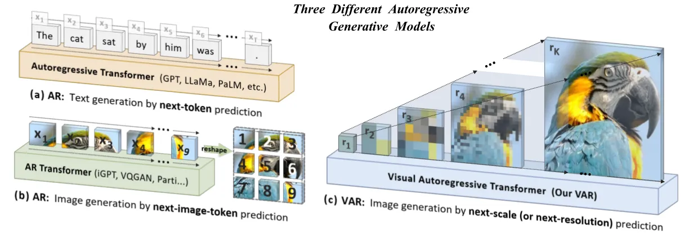
VAR Figure 2 （arXiv 2404.02905）：Standard autoregressive (AR) vs. visual autoregressive (VAR). (a) AR for language：逐词左→右；(b) AR for images：raster-scan 逐视觉 token；(c) VAR ：multi-scale token maps 由粗到细 autoregressively 生成、每个尺度内并行。VAR 需 multi-scale VQVAE。① 为什么能 work 图像能像语言一样"逐 token 生成"，前提是把连续像素离散化 （VQ tokenizer 把图编码成有限码本的 token 序列），于是链式法则 p(x)=Π_k p(tok_k | tok_<k, c) 把联合分布拆成一串可 teacher-forcing 学习 的条件分布——与 GPT 完全同构，整套 LLM 基建（交叉熵、KV-cache、vLLM）可直接迁移 。反例 ：不离散化就得建模连续高维条件、难度大增。VAR 洞察 ：光栅 next-token 把 2D 图强行拍成 1D、要 256 步且违背图像结构；改成由粗到细 next-scale （先全局后细节）更符合视觉先验、步数骤降。
② 工作原理是什么 LlamaGen ：VQ 下采样 16 → 16×16=256 token，Llama 骨干（RoPE + SwiGLU + pre-norm）逐 token 预测，文本作前缀 embedding 注入。VAR ：把图编码成多尺度 token maps ，把因式分解从"逐 token"改成"逐尺度"—— p(x)=Π_r p(map_r | map_{<r}, c)，每步一次性预测整张 更高分辨率 token map。
LlamaGen （arXiv 2406.06525）：VQ tokenizer 下采样 16、码本用满率 97%、rFID 0.94；Llama 架构逐 token 预测 p(token_k | token_<k, text)；可复用 vLLM 加速 ~300~400%。ImageNet 256²、3.1B 模型 FID 2.18 ，超 LDM/DiT 。VAR （NeurIPS 2024 Best Paper ，arXiv 2404.02905）：next-scale prediction（1×1→2×2→…→16×16，每步预测整张更高分辨率 token map）；步数=尺度数(~10) 而非 256，快 20× ；ImageNet 256² FID 18.65→1.73 、IS 80.4→350.2 ，首次让 GPT 式 AR 超过 DiT，且现幂律 scaling 与 zero-shot 泛化。
③ 怎么实现的 tokenizer 先在图像上训好（VQ / 多尺度残差量化）再冻结；AR 骨干做 teacher-forcing next-token / next-scale 交叉熵。文本条件作前缀 token；CFG 移到 logits 层 外推 logit_u + cfg·(logit_c − logit_u)。推理复用 KV-cache 与 vLLM 服务栈。
# AR 图像解码（LlamaGen + logits 层 CFG）
def llamagen_sample(ar_model, vq_decoder, text_emb, seq_len, top_k=2000, cfg=4.0):
tokens = []
for k in range(seq_len): # 逐 token
logit_c = ar_model(text_emb, tokens) # p(·| text, 已生成)
logit_u = ar_model(null_text_emb, tokens) # p(·| ∅, 已生成)
logit = logit_u + cfg * (logit_c - logit_u) # ★ AR 里也能用 CFG（logits 外推）
tokens.append(sample_top_k(softmax(logit), top_k))
return vq_decoder(reshape(tokens, (16, 16))) # 离散 token → 像素④ 为什么这么实现（设计动机 + 权衡） ·
为何离散 token + AR ：直接复用成熟 LLM 训练 / 推理栈（KV-cache、vLLM、投机解码），天然接入统一多模态（
§7 的 Chameleon/Emu3）。
·
为何 VAR 改 next-scale ：光栅顺序违背图像"全局→局部"结构且步数=token 数；next-scale 让步数=尺度数（~10），既提速 20× 又提质（FID 1.73）。
·
CFG 在 AR ：不作用于 ε/v 而在
logits 层 外推。
维度 LlamaGen（next-token） VAR（next-scale） 解码单位 单个 token（光栅序） 整张尺度 token map （粗→细）步数 256（=16×16） 尺度数 ~10 （快 20×）ImageNet 256² FID 2.18（3.1B） 1.73 LLM 生态复用 强 （Llama + vLLM）中（改造注意力） 额外特性 直接接文本 LLM 幂律 scaling + zero-shot 编辑
3.1 Diffusion 采样：DDPM（随机）→ DDIM（确定/加速）① 为什么能 work 扩散能从纯噪声"反推"出符合文本的图，根子是把一个不可解的大逆问题拆成 T 个可解的小步 。前向加噪把任意 数据分布抹成高斯；只要在每个噪声层 都知道反向转移，就能从噪声一路走回数据。理论地基是 Anderson 反向 SDE ：一个扩散 SDE 的时间反演仍是扩散，其漂移由 score ∇log p_t(x) 决定；而 ε-prediction 与 score 等价 ——∇log p_t(x) = −ε_θ(x,t)/√(1−ᾱ_t)。所以"学去噪"＝"学各层 score"＝"定义了一条合法的噪声→数据动力学"。反例 ：只知道 t=0 的 score（干净数据）无法采样；单步从纯噪声一跳到底也不行——后验 p(x_0|x_T) 极度多峰、病态，必须分 ~T 层逐步收紧。
② 工作原理是什么 前向用重参数化一步 到 x_t；训练回归噪声 ε；反向每步"减噪声、再加回一点噪声"。DDIM 的确定性来自把前向式反解出 x̂_0 ：由 x_t = √(ᾱ_t)·x_0 + √(1−ᾱ_t)·ε 反解得预测干净图 x̂_0=(x_t−√(1−ᾱ_t)·ε_θ)/√(ᾱ_t)，再用"预测 x_0 ＋ 指向 x_t 的方向"重构 x_{t−1}，随机项系数 σ_t 可调。
前向加噪：x_t = √(ᾱ_t)·x_0 + √(1−ᾱ_t)·ε ，ε~N(0,I)，ᾱ_t=Π_{s≤t}α_s DDPM 2006.11239
训练目标：L = E_{t,x_0,ε} ‖ ε − ε_θ (x_t, t, c) ‖² ε-prediction ↔ score
DDPM 反向（随机）：x_{t−1} = (1/√α_t)·( x_t − (1−α_t)/√(1−ᾱ_t)·ε_θ(x_t,t,c) ) + σ_t·z 每步 1 次前向，需 ~1000 步
DDIM 更新：x_{t−1} = √(ᾱ_{t−1})·x̂_0 + √(1−ᾱ_{t−1}−σ_t²)·ε_θ + σ_t·z ，x̂_0=(x_t−√(1−ᾱ_t)·ε_θ)/√ᾱ_t DDIM 2010.02502
· η=0 ⇒ σ_t=0 ：随机项消失，同一 x_T 恒映到同一 x_0（可 latent 插值 / 复现 / 图像反演）· η=1：退化回 DDPM · 中间 η∈(0,1) 平滑过渡随机↔确定。
③ 怎么实现的 训练：T=1000 层、线性或 cosine β 调度、ε-参数化，与采样器解耦 （同一权重可换 DDPM / DDIM / DPM-Solver）。采样：DDIM 取 η=0、把 1000 步子采样 到 20~50 步即得高质量样本（≈ probability-flow ODE 的 Euler 离散），比 DDPM 快 10~50× 且可复现。
# DDIM 确定性采样（η=0，从 1000 步子采样到 ~50 步）
x = torch.randn(shape) # x_T ~ N(0, I)
ts = linspace(T-1, 0, steps).long() # 1000 层里挑 ~50 个
for i, t in enumerate(ts):
eps = unet(x, t, c) # 预测噪声
x0hat = (x - sqrt(1-abar[t]) * eps) / sqrt(abar[t]) # 反解 x̂_0
t_prev = ts[i+1] if i+1 < len(ts) else 0
x = sqrt(abar[t_prev]) * x0hat + sqrt(1-abar[t_prev]) * eps # σ_t=0：确定性
return vae_decode(x)④ 为什么这么实现（设计动机 + 权衡） ·
为何非马尔可夫化（DDIM） ：DDPM 的马尔可夫链强制随机、必须近满步；DDIM 把前向推广为
非马尔可夫 ，训练目标不变（
无需重训 ）却能确定性跳步。
·
随机 vs 确定的取舍 ：随机采样多样性略高、可"重掷"细节；确定性采样可复现、可插值 / 反演，是编辑（
§6 ）与一致性生成的前提。
·
代价 ：步数越少数值误差越大，极少步需高阶 solver（DPM-Solver / Heun）或改用 flow（
§3.4 ）补偿。
维度 DDPM（随机） DDIM（确定 / 加速） 反向过程 马尔可夫，含随机项 σ_t·z 非马尔可夫，η=0 时无随机项 步数 ~1000（慢） 20~50 （快 10~50×）可复现 / 插值 否（每次不同） 是 （同 x_T → 同 x_0）是否需重训 — 否 ，复用同一 ε_θODE 视角 反向 SDE 离散 probability-flow ODE 的 Euler 离散
3.3 对比：Classifier Guidance（前 CFG 时代）① 为什么能 work CFG 之前，Dhariwal & Nichol（NeurIPS 2021, 2105.05233）用真实分类器的梯度 把 score 掰向类别 y。原理同样是贝叶斯：p(x|y) ∝ p(x)·p(y|x) ⇒ ∇log p(x_t|y) = ∇log p(x_t) + s·∇log p_φ(y|x_t)。分类器梯度 ∇log p_φ(y|x_t) 指向"更像类别 y"，乘系数 s 即放大控制力度——这正是"扩散击败 GAN"的关键旋钮。反例 / 前提 ：p_φ 必须在带噪图 x_t 上训练；用干净图训的分类器在 x_t 上梯度是噪声、引导失效。
② 工作原理是什么 把分类器梯度换算成 ε 修正（乘 −√(1−ᾱ_t)），即可插进任意去噪采样器；s 越大越贴类别、越牺牲多样性——与 CFG 调 fidelity/diversity 同效，只是信号来源是"外部真分类器"而非"隐式分类器"。
score 形式：∇_x log p(x_t|y) = ∇_x log p(x_t) + s·∇_x log p_φ(y|x_t) Classifier Guidance 2105.05233
ε 形式（等价）：ε̃(x_t) = ε_θ(x_t) − √(1−ᾱ_t)·s·∇_{x_t} log p_φ(y|x_t) 需在带噪图上重训分类器 p_φ
③ 怎么实现的 额外训练一个噪声感知分类器 p_φ(y|x_t)（常用 UNet 编码器 + 分类头，在 ImageNet 全噪声层上训）；采样每步先算 ε_θ，再减去 s·√(1−ᾱ_t)·∇log p_φ。Dhariwal & Nichol 的 ADM-G 借此在 ImageNet 上把 FID 压到当时 SOTA、首次全面超越 BigGAN。
# Classifier Guidance 采样一步（需预训练 noisy 分类器 clf）
eps = unet(x, t) # 无条件 / 类别无关 ε
with torch.enable_grad():
x_in = x.detach().requires_grad_(True)
logp = clf(x_in, t).log_softmax(-1)[:, y] # log p_φ(y | x_t)
grad = torch.autograd.grad(logp.sum(), x_in)[0]
eps_tilde = eps - sqrt(1 - abar[t]) * s * grad # 用分类器梯度修正 ε
x = ddim_step(eps_tilde, t, x)④ 为什么被 CFG 取代（对比表） CFG 用"生成模型自己充当分类器"，把外部 ∇log p(y|x) 换成 ε_cond − ε_uncond，
免分类器 却达到同样 fidelity/diversity 调节；代价仅是采样跑两次网络。文本条件尤其偏爱 CFG——为"任意文本"训带噪分类器不现实。
维度 Classifier Guidance Classifier-Free Guidance 是否需额外模型 需 ，且必须在带噪图上重训分类器不需 ，一个生成网络搞定控制信号来源 真实分类器梯度 ∇log p(y|x_t) 隐式分类器 ε_cond − ε_uncond 训练改动 额外训练管线 一行 ：随机 dropout 文本infer 成本 生成 1 次 + 分类器 1 次（含反传求梯度） 生成 2 次 （cond+uncond） 能否处理任意文本 难（须为条件空间训分类器） 能 （∅ 对任意 prompt 通用）现状 类别条件经典法 文本→图像事实标准
对比 三大生成范式 infer 对比
维度 Diffusion (DDPM/DDIM) Flow / Rectified Flow AR (LlamaGen / VAR) 数学对象 各噪声层 score ∇log p_t 速度场 v_t（ODE） 条件类别分布 p(tok|·) infer 迭代 反向去噪 20~1000 步 解 ODE，few-step~1 步 逐 token / 逐 scale 确定性 DDIM(η=0) 确定；DDPM 随机 ODE 天然确定 采样随机（温度/top-k） 文本控制旋钮 CFG sCFG （作用于 v）CFG （作用于 logits）/温度典型代表 SD1.5/SDXL, Imagen SD3, FLUX LlamaGen, VAR , Parti复用 LLM 基建 否 否 是 （KV-cache/vLLM）
VLM 自回归解码 · 视觉 token 如何进 LLM · GenCeption 图→文→图 循环评估。
通用三段式 ：视觉 encoder → projector/adapter → LLM 自回归解码。核心是把图像变成一串"视觉 token"塞进 LLM 上下文，然后像续写文本一样逐 token 生成答案 。关键洞察：image→text 不是"反演生成器"，而是直接学出的正向条件分布 p(text|image) —— captioning/VQA 就是这条分布的采样。
4.1 VLM 自回归解码（LLaVA / Qwen-VL / BLIP-2 / Flamingo）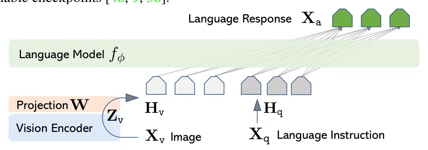
LLaVA Figure 1 （arXiv 2304.08485）：LLaVA network architecture. 输入图 Xv 经预训练 CLIP ViT-L/14 得视觉特征 Zv；一个可训练投影矩阵 W 把 Zv 转成语言嵌入 token Hv （与 LLM 词嵌入空间同维），与文本指令拼接后自回归解码。① 为什么能 work image→text
不是"反演"生成器 ，而是被
直接训练出来的正向条件分布 p(text|image) 。三根支柱叠加：(a)
CLIP 对齐地基 ——视觉 encoder（CLIP ViT）经图文对比学习，patch 特征天然落在
与语言语义可对齐 的空间（不是像素堆，而是"可被语言描述的概念"，地基见
A0 ）；(b)
projector 翻译 ——把视觉特征投进 LLM 词嵌入空间，成为 LLM 看得懂的"外语单词"（软 prompt）；(c)
梯度桥 ——训练时语言 loss 的梯度
反传穿过 projector ，强制视觉 token 编码"可被语言解码"的语义。
反例 ：若 projector 随机初始化且
冻结不训 ，视觉 token 落在词空间的乱位、LLM 无从解码，输出与图像无关；若视觉塔改用纯像素重建特征（无图文对齐），captioning 立刻退化。
理论依据 ：next-token 训练 = 最大化
log p(text|image)，captioning/VQA 就是这条已学分布的采样，
无需任何"反推/反演" 。
② 工作原理是什么 通用三段式 视觉 encoder → projector/adapter → LLM 自回归解码：把图像变成一串视觉 token H_v 塞进 LLM 上下文，再像续写文本一样逐 token 展开答案。条件语言建模按链式法则分解：
p(X_ans | X_img, X_instruct) = Π_i p(x_i | H_v, X_instruct, x_<i) ， H_v = projector( vision_enc(X_img) )LLaVA 2304.08485
· 逐项 ：H_v 是视觉 token 序列 [n_vis, d_llm]，X_instruct 是文本指令 token，x_<i 是已生成答案前缀；每步 LLM 前向 → softmax(logits) → 采样 x_i → 拼回上下文继续，直到 EOS。· shape 直觉 ：Z_v [n_patch, d_v] —projector→ H_v [n_vis, d_llm]，与文本 H_txt [n_txt, d_llm] 拼成 [n_vis+n_txt, d_llm] —— 视觉/文本 token 落在同一嵌入空间被 LLM 无差别 attend ，图像因此成为解码的"上下文/前缀"。· 视觉 token 数（数值小例） ：LLaVA-1.5（2304.08485）= CLIP ViT-L/14-336 的 24×24 = 576 token；Qwen-VL（2308.12966）压成 256 ；BLIP-2（2301.12597）Q-Former 32 ；Flamingo（2204.14198）Resampler 64 。
③ 怎么实现的 把视觉 token 插到文本序列里（替换 <image> 占位或前置），首次 prefill 一次吃完（视觉+指令）token、之后每步只喂 1 个新 token 并复用 KV-cache ：
def vlm_caption(image, prompt, vision_enc, projector, llm, tokenizer, max_new=256):
# 1) 图像 → 视觉特征 → 视觉 token（进入 LLM 的嵌入空间）
Z_v = vision_enc(image) # CLIP ViT patch 特征 [n_patch, d_v]
H_v = projector(Z_v) # 线性/MLP/Q-Former → [n_vis_tok, d_llm] ← "看图"入口
# 2) 文本 token 嵌入
ids = tokenizer(prompt).input_ids # "USER: <image>\n描述这张图 ASSISTANT:"
H_txt = llm.embed_tokens(ids)
# 3) 关键：把视觉 token 插到文本序列里（替换 <image> 占位或前置）
inputs_embeds = concat_at_image_placeholder(H_txt, H_v)
# 4) 自回归解码：图像作"前缀/条件"，逐 token 生成语言
out, past = [], None
for _ in range(max_new):
logits, past = llm(inputs_embeds=inputs_embeds, past_key_values=past)
next_tok = sample(logits[:, -1]) # greedy / top-p / 温度
if next_tok == EOS: break
out.append(next_tok)
inputs_embeds = llm.embed_tokens(next_tok) # 只喂新 token（KV-cache 复用）
return tokenizer.decode(out) # ← 生成的语言（caption / 答案）训练配方（LLaVA-1.5，已核实 2310.03744） ：CLIP ViT-L/14-336（冻结）+ 2 层 MLP projector + Vicuna-7B/13B。两阶段 ：① 对齐——只训 projector 、冻结 ViT 与 LLM，558K 图文对（最省，约 1 h / 8×A100）；② 指令微调——放开 LLM，665K 多任务 VQA/对话混合（ViT 仍冻结）；全程仅约 1.2M 公开数据、1 天单机（8×A100）刷到 11 项 SOTA。Qwen-VL ：position-aware VL adapter 把变长 patch 压成 256 token（注入 2D 位置）；BLIP-2 ：Q-Former 32 query（dim 768、仅 188M 参数，把 257×1024 压成 32×768）桥接冻结 ViT + 冻结 OPT/FlanT5。
④ 为什么这么实现（设计动机 + 权衡） 理解侧"视觉怎么进 LLM"有三条主流接法，核心矛盾是
细节保留 ↔ 上下文成本 ：
维度 Projection（LLaVA/Fuyu） Q-Former/Resampler（BLIP-2） Gated Cross-Attn（Flamingo） 视觉→LLM 方式 线性/MLP 投影、当软 token 前置 learnable query cross-attend 压定长 新增 gated cross-attn 层插进冻结 LLM 视觉 token 数 = patch 数（LLaVA-1.5 576 ，多） = query 数（BLIP-2 32 ，定长少） Resampler 64 ，单图交错注入 训练开销 最省 （阶段一只训 W/MLP）多训 Q-Former 一模块（188M） 训 gated 层，tanh 门 init 0 保护预训练 LLM 是否改 LLM 结构 否（只加前缀 token） 否（喂软 prompt） 是 （插新层）细节 vs 压缩 全 patch → 细节全 、占上下文多 压缩 8× → 省 context、丢细节 居中；多图/视频友好 代表 LLaVA、MiniGPT-4、Fuyu BLIP-2 Flamingo
·
OCR/计数能力边界 ：视觉 token 数直接决定细粒度——Projection 保留全部 576 patch，
OCR/读图表强 但长上下文贵；Q-Former 压到 32（8× 压缩）省 context 却
丢密集文字/计数细节 （原文消融：16→32 有增益、64 边际收益递减）。这正是
4.2 GenCeption 里 text-intensive 图片（OCR/代码/计算）暴露 VLM 短板的根源。
·
为何主流选 Projection ：极简、参数少、复用冻结 encoder/LLM，且 336px 的 576 token 对文档/图表精度增益显著——这是 LLaVA-1.5 极省成本却刷到 SOTA 的关键；Q-Former/Resampler 则用"定长瓶颈"换多图/视频与常数推理成本。
4.2 ⭐ GenCeption：图→文→图 闭环探针（双向 infer 的直接证据）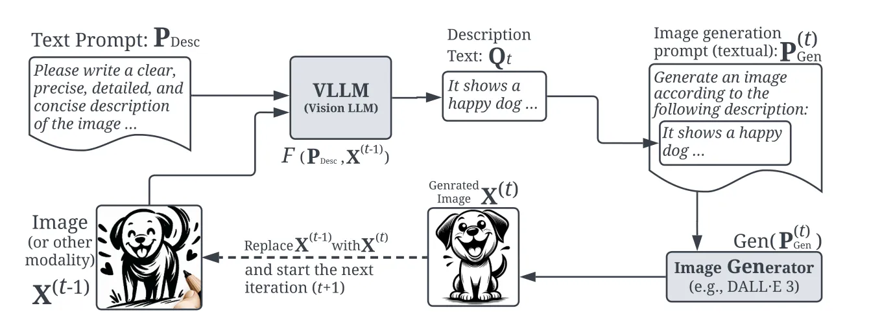
GenCeption Figure 1 （arXiv 2402.14973）：第 t 轮迭代示意。从单模态图集取初始图 X(0)（t=1）；VLLM 详细描述该图 → 图像生成器据描述产出 X(t) ，如此循环，语义随迭代漂移，漂移速度反向度量幻觉。Cao et al., GenCeption: Evaluate (V)LLMs with Unlabeled Unimodal Data ，TrustNLP@NAACL 2024，arXiv 2402.14973 （期刊扩展 Computer Speech & Language 2025）。
① 为什么能测幻觉 把 image→text（描述） 与 text→image（重画） 串成闭环反复迭代：每次跨模态转换都会注入一点信息损失/幻觉，语义随迭代漂移 。灵感来自"你画我猜"传话游戏 DrawCeption ——强模型能把原始语义保持更久 ，爱幻觉的模型漂移更快 ，所以"漂移速度"就是幻觉的行为学度量。为什么它是双向 infer 的天然探针 ：只有当两条 infer 链都语义忠实，环路才不漂移 ——任一侧幻觉都会被逐轮放大、暴露。对比传统基准（反例） ：MME/VQA 这类有标注 基准，题库会泄漏进训练集（数据污染 ）、易被针对性刷满（饱和 ）；GenCeption 只需无标注单模态图片 、无固定答案可背，用"自一致性"探测，天然抗污染、抗饱和、省标注。
② GC@T 公式与推导 用预训练 ViT 把 T+1 张图编码为 z^(0..T)，逐轮算与原图的余弦相似度 s^(t)=cos(z^(0),z^(t))∈[−1,1]（近似第 t 轮的语义保持度），再按迭代序号 t 加权平均 ：
GC@T := Σ_{t=1}^{T}( t·s^(t) ) / Σ_{t=1}^{T} t ， 分母 Σ_{t=1}^{T} t = T(T+1)/2原文 Eq.3，GC@T∈[−1,1]
· 为何用 t 加权 ：越靠后的迭代离原图越远、最能说明问题 ，故权重随 t 线性增大，同时刻画整段动态（而非只看末轮）。· 数值小例（T=3） ：分母 = 1+2+3 = 6，GC@3 = (1·s^(1) + 2·s^(2) + 3·s^(3)) / 6。· 解读 ：GC@T 越高 = 语义越连贯 = 幻觉越低 （二者反相关）；特例 GC@1 = s^(1)。· 变体 GC_FID@T ：把"ViT+余弦"换成原图集 vs 生成图集的 FID （Eq.4，此时越低越好 ）。
③ 算法伪代码 + 实测数值 生成器用 DALL·E（默认）/ Imagen2 ，VLM 与生成器温度=0 降随机性，P_Desc 用一句固定简短指令降 prompt 敏感：
def gc_at_T(vllm, image_gen, img_encoder, X0, P_desc, T=3):
imgs = [X0]
for t in range(1, T+1):
desc = vllm.describe(imgs[-1], P_desc) # image→text
imgs.append(image_gen(desc)) # text→image
z = [img_encoder(im) for im in imgs] # ViT embedding
s = [cosine(z[0], z[t]) for t in range(1, T+1)]
num = sum(t * s[t-1] for t in range(1, T+1)); den = sum(range(1, T+1))
return num / den # = GC@TMMECeption 基准 （复用 MME 图片、丢弃其 QA 标注）：GC@3 与 MME / HallusionBench / OpenCompass 强相关 （GC@1 vs MME 相关系数 0.99 ），说明这套"图→文→图"闭环确实测到了多模态核心能力。VLLM 排名 ：Gemini-1.5-Pro > GPT-4o > GPT-4V > Claude3-Opus > mPLUG-Owl2 > LLaVA-13B/7B；人类显著优于所有 VLLM （尤其 OCR/代码/翻译/计算类 text-intensive 图片），揭示当前 VLM 的双向语义保持短板。
④ 为什么这么设计（对比有标注基准 + 权衡） 立意是"
用无标注数据 + 自一致性 取代人工标注答案"，与传统基准的分工对比：
维度 传统有标注基准（MME/VQA/HallusionBench） GenCeption（GC@T 闭环） 是否需人工标注 需 （QA 对 / 标签）不需 ，只要无标注图抗数据污染 弱（题库易泄漏进训练集） 强 （无固定答案可背）抗基准饱和 弱（易被刷满分） 强 （自一致性难针对性优化）测量对象 单向 image→text 正确率 双向 image↔text 语义保持幻觉度量 靠特定幻觉题打分 语义漂移速度 （GC@T 越低漂移越快）主要局限 标注成本高、覆盖窄、会饱和 依赖 text→image 生成器质量（生成器成共同上游，其对排名的影响需核实）
·
为何加权而非等权 ：等权会淹没"末轮偏离"这一最强信号；线性 t 加权兼顾"终态偏离"与"全程动态"。·
为何温度=0 + 固定 P_Desc ：把采样随机性与 prompt 敏感性压到最低，让 GC@T 主要反映
模型能力 而非噪声。·
对 §4 的意义 ：它是"双向 infer"最直接的行为学证据——
4.1 的 image→text 与
§3 的 text→image 谁先漂移，环路立刻放大暴露。
本节 = Q4 的「综合抽象」 ：各机制的具体实现/动机（③④）见
§3 /
§4 /
§6 ；此处统一论证"infer 能力 = 训练目标的直接兑现"，给出训练目标 ↔ infer 行为的总映射（condition dropout→CFG；next-token→captioning）。
主线论点 ：infer 时的能力不是额外获得的 ，而是训练目标在采样过程中的直接兑现 。训练目标与 infer 行为是同一枚硬币的两面。
5.1 CFG：训练做 condition dropout ⇒ infer 能"外推控制" 训练以 p≈0.1 随机置空文本，让同一网络 既会 ε_θ(x,c) 又会 ε_θ(x,∅)——相当于同时学到"有文本分布"与"无文本边缘分布"。因 ε_cond−ε_uncond ∝ ∇_x log p(c|x)（隐式分类器），infer 时线性外推 这个差异方向 = 沿"更符合文本"多走几步 ⇒ 文本从弱条件变强控制。训练一行改动，infer 一行外推 。
5.2 VLM：next-token 训练 ⇒ infer 能 captioning/VQA 训练最小化 −Σ log p(x_i | image, x_<i)，这本身就是 captioning/VQA 目标。语言 loss 梯度反传穿过 projector（LLaVA 阶段一只训 projector 做对齐），强制视觉 token 携带"可被语言解码"的语义 。故 image→text 是被直接训练出的正向条件生成，非反推。能力边界：只会说"训练分布里能被语言解码的东西"（密集 OCR/精确计数就是 GenCeption 暴露的短板）。
5.3 Diffusion / Flow：学 score / 速度场 ⇒ infer 能反向生成 ε-prediction / 速度回归本质是在每个噪声层估计 ∇log p_t(x)（score）或搬运噪声的速度场 v_t。理论保证：给定各层 score，Anderson 反向 SDE / probability-flow ODE 定义了合法的"噪声→数据"动力学。infer = 按学到的动力学积分（去噪/解 ODE）= 训练所学动力学的时间反演 ；文本 c 把每层 score/速度变成条件版，CFG 再放大条件方向。
5.4 AR 图像：teacher forcing ⇒ infer 逐 token/尺度采样 对图像 token 序列（LlamaGen）/多尺度 token maps（VAR）做 teacher-forcing 交叉熵学 p(tok_k | tok_<k, c)。infer 按链式法则 Π p(tok_k|tok_<k,c) 逐个采样——采样顺序 = 训练时的条件顺序 ；文本前缀/class token 提供条件，CFG 可在 logits 层外推。
速查 训练目标 → infer 行为
能力（infer） 直接对应的训练目标 让它 work 的关键机制 文本"控制"图像强度可调 condition dropout 联合训练 cond/uncond ε_cond−ε_uncond ∝ ∇log p(c|x)，infer 外推 去噪反向生成图像 各层 score / 速度场回归 反向 SDE / probability-flow ODE 合法性 确定性/可复现/快采样 同一 ε 目标(DDIM)/直线路径(RF) 非马尔可夫→ODE；直线可少步 Euler 图像→语言描述/问答 max log p(text|image) next-token 梯度过 projector 逼视觉 token 可被语言解码 逐 token/尺度出图 teacher-forcing AR 交叉熵 链式分解 + KV-cache 采样 双向语义忠实（不漂移） 两侧条件生成各自训练充分 GenCeption 用 GC@T 反向度量幻觉
按 Best First：ControlNet（结构条件，ICCV23 Best Paper）· instruction 指令编辑 · training-free attention 操纵 · mask-based 重绘（基础） · 训练数据构造。①–④ 为类型 ID，非先后。
本质 ：文字驱动图像编辑 = 在标准 text-to-image 采样过程里，额外注入"锚定原图"的约束 ，使输出既服从新文本、又保留原图该保留的部分。锚点注入的位置 决定方法类别：latent 覆盖 / 权重旁路 / attention 操纵 / 结构条件 / inversion 五层。两把最有用的分类尺 ：① 要不要训练；② 要不要 mask。
核心表 14 方法分类总表（arXiv 已核实）
方法 类别 要训练? 要 mask? 锚定机制（原理一句话） venue · arXiv SD Inpainting mask 重绘 微调(可选) ✅ 每步用原图 latent 覆盖已知区，只在 mask 内去噪 2112.10752 RePaint mask 重绘 ❌免训 ✅ 无条件 DDPM，已知区注入 + resample 反复和谐化 CVPR22 · 2201.09865 Blended Diffusion mask 重绘 ❌ ✅ CLIP 引导 + 每步空间混合前景/背景 CVPR22 · 2111.14818 Blended Latent Diff. mask 重绘 ❌ ✅ Blended 的 latent 版，更快 TOG23 · 2206.02779 InstructPix2Pix 指令编辑 ✅合成 ❌ GPT-3+P2P 造 45 万三元组，训"指令→编辑" CVPR23 · 2211.09800 MagicBrush 指令编辑 ✅人工 可选 人工标注真实编辑三元组微调 IP2P NeurIPS23 · 2306.10012 Emu Edit 指令编辑 ✅多任务 ❌ 多任务 + 任务嵌入，SOTA 指令编辑 CVPR24 · 2311.10089 Prompt-to-Prompt attention ❌ ❌ 替换/加权 cross-attention map 实现编辑 ICLR23 · 2208.01626 Null-text Inversion attention ❌优化 null ❌ 优化 null-embedding 让真实图可被 P2P 编辑 CVPR23 · 2211.09794 Plug-and-Play attention ❌ ❌ 注入空间特征 + self-attn 保结构 CVPR23 · 2211.12572 MasaCtrl attention ❌ ❌ mutual self-attn 查询原图，非刚性编辑 ICCV23 · 2304.08465 ControlNet ⭐结构条件 ✅旁路 ❌(条件图) 复制编码器 + zero-conv 注入结构条件 ICCV23 Best Paper · 2302.05543T2I-Adapter 结构条件 ✅轻量旁路 ❌ 77M 外挂 adapter 对齐内部知识 AAAI24 · 2302.08453 SDEdit 加噪重绘 ❌ ❌ 加噪到中间步再用新 prompt 去噪 ICLR22 · 2108.01073
④ 结构条件控制：ControlNet ⭐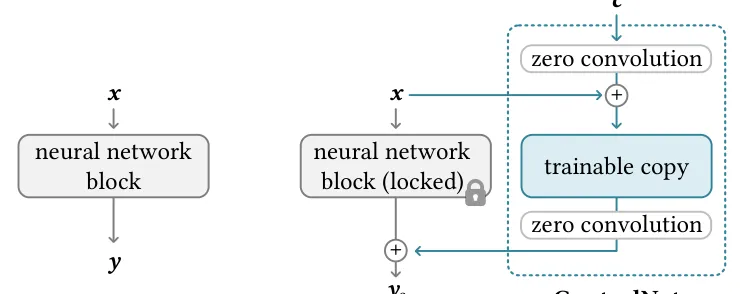
ControlNet Figure 2 （arXiv 2302.05543）：(a) 原 neural block 把特征图 x→y；(b) 加 ControlNet＝锁定原 block + 可训练副本，用 zero convolution（1×1 卷积、权重与偏置初始化为 0）连接 ，c 为要注入的条件向量。零初始化使训练起点等于原模型、不退化。要控精确结构 （边缘/深度/姿态/分割/涂鸦）需喂一张条件图 。难点：既要新增条件通路，又不能破坏 预训练大模型已有能力。ControlNet = ICCV 2023 Best Paper (Marr Prize) （已核实），arXiv 2302.05543。
① 为什么能 work 招牌是 zero-convolution （1×1 卷积，weight 与 bias 都初始化为 0 ）。训练第一步 两个 zero-conv 全为 0 → 两个 Z(·) 项 = 0 → 输出 y_c = F(x;Θ) = y（论文 Eq.3），与原模型逐比特相同 ，有害噪声一开始无法污染主干隐状态。同时因可训练副本也吃输入 x、且克隆了预训练权重 ，它一上来就是个"满血强 backbone"，只是被 zero-conv 暂时"闸门"住。为何梯度还能流（关键） ：对 Z(I)=W·I+B，∂Z/∂W = I，即使 W=0，只要输入特征 I≠0（来自预训练副本，天然非 0），W 的梯度就非 0 → 第一步梯度下降后 W 变非 0、闸门缓缓打开。反例（消融） ：把 zero-conv 换成高斯初始化的普通卷积，随机噪声一开始就当梯度污染主干 → 性能崩到 ControlNet-lite。
② 工作原理是什么 锁住原 block F(·;Θ)（冻结），克隆可训练副本 F(·;Θ_c) 接收条件 c，副本与主干用两个 zero-conv Z 连接：
y_c = F(x;Θ) + Z( F( x + Z(c;Θ_z1) ; Θ_c) ; Θ_z2) ； 初始 Z=0 ⇒ y_c = F(x;Θ) = y ControlNet Eq.2/3 · 2302.05543
逐项梯度（论文附录）：Z(I;W,B)_{p,i} = B_i + Σ_j I_{p,j}·W_{i,j}，于是 ∂Z/∂B_i = 1、∂Z/∂I_{p,i} = Σ_j W_{i,j} = 0（初始）、∂Z/∂W_{i,j} = I_{p,j} ≠ 0 。即 W=0 只让"对特征 I 的梯度"归零、不影响"对权重 W 的梯度" ；I 非 0 ⇒ 一步 GD 后 W 非 0 ⇒ 之后 ∂Z/∂I 也非 0、网络开始学。zero-conv 由此"从 0 渐长为普通卷积"，把条件安全注入主干。
③ 怎么实现的 把 SD 的 编码器各 block + 中间 block 克隆成可训练副本、用 zero-conv 挂回主干。目标是标准去噪损失 L = 𝔼‖ε − ε_θ(z_t, t, c_t, c_f)‖²（c_t=文本、c_f=条件图）；训练时随机 50% 文本置空 逼模型从条件图本身学语义。数据 <50k 到 >1m 都能稳训；出现 "sudden convergence" ——因 zero-conv 全程输出高质量图，模型常在某步（如第 6133 步）突然 学会跟随条件。
from diffusers import StableDiffusionControlNetPipeline, ControlNetModel
import torch
controlnet = ControlNetModel.from_pretrained(
"lllyasviel/sd-controlnet-canny", torch_dtype=torch.float16)
pipe = StableDiffusionControlNetPipeline.from_pretrained(
"runwayml/stable-diffusion-v1-5", controlnet=controlnet,
torch_dtype=torch.float16).to("cuda")
out = pipe("a futuristic city at night",
image=canny_edge_image, # 条件图 c_f = Canny 边缘
num_inference_steps=20,
controlnet_conditioning_scale=1.0).images[0]④ 为什么这么实现（设计动机 + 权衡） 为何"冻结原模型 + 旁路"而非全量微调 ：结构控制只想加一种条件 、不想动预训练已学到的产品级能力；旁路把新能力隔离在副本里，原模型逐比特不变。为何用 zero-conv 而非普通初始化 ：普通高斯初始化的旁路一开始就用随机噪声污染主干、破坏预训练分布；zero-conv 让起点=原模型、再"从 0 渐长"，小数据也稳训。ControlNet vs T2I-Adapter ：二者都冻结原模型、都属"结构条件旁路"，差别在旁路的重量级：
维度 ControlNet ⭐ T2I-Adapter 旁路结构 克隆半个 UNet 编码器 + zero-conv 门控 独立轻量 CNN adapter（多尺度特征） 参数量 / 成本 重（≈半个 UNet），训练慢 轻（≈77M ），训练快省 精度 / 可控性 强，大改动可控（Best Paper） 略逊，大改动稍弱 组合多条件 可（多 ControlNet 相加） 可（多 adapter，手调融合权重）
② Instruction-based Editing（指令编辑）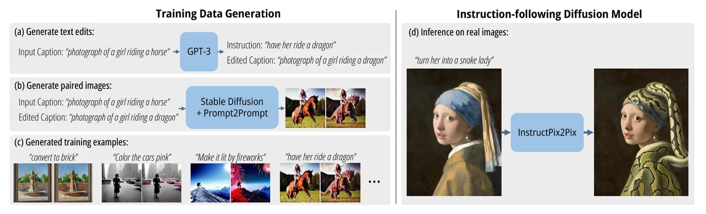
InstructPix2Pix Figure 2 （arXiv 2211.09800）：方法两部分——(a) finetuned GPT-3 生成指令与编辑后 caption；(b) Stable Diffusion + Prompt-to-Prompt 由 caption 对生成结构对齐的图像对；(c) 造出 45 万+ 训练三元组；(d) 训练 InstructPix2Pix 据指令编辑图像。不给 mask、不给"改后完整描述"，只给一句指令 （"make it winter"）。模型自己定位改哪、怎么改——做法是造一批 (指令, 原图, 目标图) 三元组，把"编辑"训练成一个条件分布 。代表 InstructPix2Pix / MagicBrush / Emu Edit。
① 为什么能 work 编辑数据难以规模化人工采集，InstructPix2Pix 的洞见是组合两个各自很强的预训练大模型、把互补知识"蒸馏"成配对数据 ：GPT-3（语言）造指令、Stable Diffusion+Prompt-to-Prompt（图像）造成对图片。一致性密码 ：P2P 让"原图/目标图"从同一噪声、共享 p 比例的 cross-attention 出发，两图只在编辑目标处不同、其余布局一致——于是模型学到的是"指令→局部改动 "而非"照描述重画"。反例 ：若不共享注意力、两图处处不同，监督信号里"改哪"无从定位，模型只会退化成普通 T2I。训练后模型在前向一次 内完成编辑，推理泛化到真实照片 + 人写指令，无需 per-image 微调 / inversion ——因为学到的是通用"编辑"条件分布。
② 工作原理是什么 score 网络同时吃
两个条件 ：图像 c_I、指令 c_T，用
两个独立 guidance scale 做三项外推（对比
§3.2 的标准单条件 CFG）：
ẽ_θ(z_t,c_I,c_T) = e_θ(z_t,∅,∅) + s_I·[e_θ(z_t,c_I,∅) − e_θ(z_t,∅,∅)] + s_T·[e_θ(z_t,c_I,c_T) − e_θ(z_t,c_I,∅)] InstructPix2Pix Eq.3 · 2211.09800
· 第 1 项 e(∅,∅)=无条件基线；· 第 2 项按 s_I 把轨迹推向"像原图 "（图像引导，推荐 1.0–1.5 ，↑ 更保结构）；· 第 3 项按 s_T 推向"听指令 "（文本引导，推荐 5–10 ，↑ 改得更狠）。两个 scale 解耦 了保真与编辑强度——这是标准单 scale CFG 做不到的，也是指令编辑的招牌。
③ 怎么实现的 数据合成三阶段 ：(a) 人工写 ~700 条 (caption c, 指令 r, 改后 caption c') 种子微调 GPT-3 → 对 LAION caption 批量生成 (c,r,c')；(b) 每对 (c,c') 用 SD+P2P 采 100 个候选、共享注意力比例 p∼U(0.1,0.9)，按 CLIP 方向相似度 + 图像 CLIP 相似度 筛最优对；(c) 得 45 万+ 三元组。训练 ：UNet 首层输入 4→8 通道 （拼接原图 latent；新增 4 通道零初始化 、前 4 通道拷预训练权重），diffusers 参考配方 res=256 / batch=4×accum4 / 15000 步 / lr=5e-5 / conditioning_dropout_prob=0.05（随机置空 c_I 或 c_T 以支持上式三项外推）。
from diffusers import StableDiffusionInstructPix2PixPipeline
import torch
pipe = StableDiffusionInstructPix2PixPipeline.from_pretrained(
"timbrooks/instruct-pix2pix", torch_dtype=torch.float16).to("cuda")
out = pipe("turn the sky into a dramatic sunset", image=init_image,
num_inference_steps=20,
image_guidance_scale=1.5, # = s_I（像原图）
guidance_scale=7.0).images[0] # = s_T（听指令）
# 训练侧关键：把原图 latent 拼进 noisy latent → 首层 4→8 通道
in_channels = 8 # 4(noisy z_t) + 4(原图 latent)
new_conv_in = nn.Conv2d(in_channels, out_ch, k, s, p)
new_conv_in.weight.zero_() # 新增通道零初始化
new_conv_in.weight[:, :4].copy_(unet.conv_in.weight) # 前 4 通道继承预训练④ 为什么这么实现（设计动机 + 权衡） ·
为何用双 CFG 而非单 CFG ：编辑天然是"
图像 + 文本 "双条件，用户既要控"多像原图"又要控"多听指令"，单一 scale 无法解耦；三项式把联合分数拆成两条独立引导方向。
·
为何走"训练出编辑先验"而非采样期注入 ：换来
前向一次、免 per-image 优化 的通用编辑器，推理最快、对人写指令最鲁棒；代价是需 45 万级数据 + 全量微调，且大幅空间变换（非刚性）较弱。
·
为何新增通道零初始化 ：与 ControlNet 同理，起点不扰动预训练权重、安全渐学（见本节
④ ControlNet ）。
三条指令数据路线（合成 vs 人工 vs 多任务）对比：
路线 代表 怎么造 规模/质量 mask 全合成 InstructPix2Pix (CVPR23) GPT-3 造指令 + SD/P2P 造图对 + CLIP 方向相似度筛 45 万，量大有噪 否 人工标注 MagicBrush (NeurIPS23) 众包 + DALL·E2 在线编辑逐轮标注 10K，真实质高 可选 多任务 Emu Edit (CVPR24) 区域/自由编辑 + CV 任务统一为生成，学习式任务嵌入 覆盖广，SOTA 否
③ Training-free Attention 编辑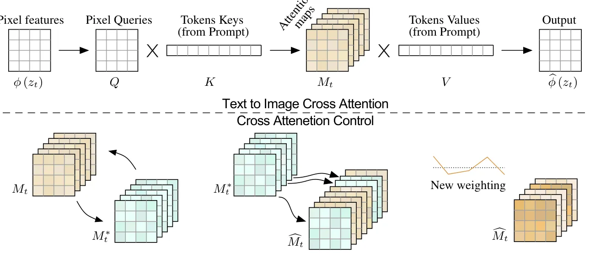
Prompt-to-Prompt Figure 3 （arXiv 2208.01626）：Method overview. 上＝视觉与文本嵌入经 cross-attention 融合、为每个文本 token 产生空间注意力图；下＝用源图的注意力图控制生成图的空间布局，从而仅改文本 prompt 即可编辑（换词时注入源图注意力图以保布局）。不训练、不给 mask，直接在采样时操纵 U-Net 内部注意力图 注入原图结构。两支：操纵 cross-attention （文字↔空间，P2P）与操纵 self-attention/features （空间↔空间，PnP/MasaCtrl）；真图需先 Null-text inversion 进模型域。
① 为什么能 work T2I 扩散里 cross-attention map 决定"每个词"与"空间布局"的绑定 ：M=Softmax(QKᵀ/√d)，M_ij = 像素 i 对 token j 的关注度 =「我这块该听哪些词」。关键事实：空间几何布局在扩散早期（高噪声步）就被 attention 定下 、细纹理留到后期。所以只要在用新 prompt 生成时把旧 prompt 的注意力图 M 注入早期步 ，就能"锁结构、换语义"。反例 ：不注入时，改一个词（cat→dog）会重算 QKᵀ→整张 M 改变→采样轨迹整条偏移→全图不同（T2I 对 prompt 极敏感）。整套免训练、不动权重 ，只改采样期的注意力张量——这是它比 mask/训练类都轻的根因。
② 工作原理是什么 Q 来自图像空间特征、K 来自文本 token；三种编辑算子都作用在 M 上，核心是"早期用源布局、后期放开"的软约束按步切换 （τ 越大越保结构）：
M_t^edit = { M_t^src, t ≥ τ（早期注入源 map 定结构）; M_t^*, t < τ（后期用新 map 补细节） } ； M = Softmax(QKᵀ/√d) Prompt-to-Prompt ICLR23 · 2208.01626
· Word Swap （bicycle→car）：前期注入原 map、后期放开；· Prompt Refinement （加词/加修饰）：用对齐函数 A 把新 prompt token 索引映射回旧 prompt，只对共有 token 注入原 map、新增词用自己的 attn；· Attention Re-weighting （调强弱，如放大 "snowy"）：把目标 token 那一列注意力乘系数 c∈[−2,2]。
③ 怎么实现的 在每个 cross-attn 层 forward 时改写注意力张量（batch 维含"原 prompt 支 / 编辑 prompt 支"）。diffusers 社区实现默认 cross_replace_steps=0.4、self_replace_steps=0.4 （=注入占总步数的比例）。真图入口 Null-text Inversion （CVPR23, 2211.09794）：P2P 只能编辑模型自生成的图；真图先做一次 DDIM 反演 得枢轴轨迹 {z_t^*} 当锚点，再只优化每步无条件嵌入 ∅_t （用 ∅_{t+1} 初始化）让带 CFG 的去噪贴合枢轴——模型权重与真实文本嵌入 C 都不动 ，per-image 几十步优化即可无损重建、再叠加 P2P 编辑。
Null-text 优化目标：min_{∅_t} ‖ z_{t−1}^* − z_{t−1}(z̄_t, ∅_t, C) ‖₂²， t=T,…,1 只调 per-step 空文本嵌入 · 2211.09794
# P2P：在每个 cross-attn forward 改写注意力（概念伪代码）
class AttentionReplace(AttentionControl):
def forward(self, attn, is_cross, place_in_unet):
if is_cross and self.cur_step < self.num_replace_steps: # 早期步注入
attn_orig, attn_edit = attn.chunk(2) # 原支/编辑支
attn_edit = attn_orig @ self.mapper # 对齐矩阵搬原图注意力
attn = torch.cat([attn_orig, attn_edit])
return attn # self-attn/后期步保持不变④ 为什么这么实现（设计动机 + 权衡） 为何操纵 attention 而非 latent/mask ：attention 是"词↔区域"的软结构 ，能免 mask 保住原图几何、又允许语义替换；比 mask 更灵活（不用画框），比训练更省（零成本）。为何真图必须先 inversion ：训练-free 注入依赖"模型自己的生成轨迹"，真图不在此轨迹上；Null-text 用测试时优化 把真图搬进模型域。代价 ：per-image 需反演/优化、对非刚性大改 （换姿态）易崩，故有 MasaCtrl 的 mutual self-attn。
免训练注入三支：操纵谁、管什么、真图支持：
方法 操纵对象 管什么 真图 Prompt-to-Prompt (ICLR23)cross-attention map 词↔空间位置（改词不改结构） 需 Null-text Plug-and-Play (CVPR23)spatial feature + self-attn 结构/语义布局一致、换外观 反演引导图 MasaCtrl (ICCV23)mutual self-attn（查源图 K/V） 保身份的非刚性 编辑（改姿态） mask 自动
① Mask-based Inpainting（掩码重绘）输入原图 x、二值掩码 m（本块约定 1=已知/保留区、0=待重绘区 ）、文本 c：mask 外逐像素等于原图，mask 内由 diffusion 依文本 + 上下文生成，接缝和谐。SD-inpaint / RePaint / Blended 本质是同一招 ——"已知区每步用原图加噪覆盖/混合"，区别只在像素 vs latent、有无 resample、有无 CLIP 引导 。
① 为什么能 work 根子是前向扩散的边缘分布本身就是模型被训练去反演的对象 。前向加噪满足 q(z_t|z_0)=𝒩(√ᾱ_t·z_0,(1−ᾱ_t)I)；inpainting 每一步都把已知区用"原图 latent 加噪到当前噪声水平 t "的样本覆盖，等于强制已知区始终精确落在 U-Net 认识的噪声流形上 。当 t→0、ᾱ_t→1，已知区收敛回原始 latent（近乎无损）；待绘区则借 U-Net 感受野"看到"正确噪声水平的已知区上下文、生成与之连贯的内容。反例（证"加噪到匹配水平"才是关键、而非"粘贴"） ：若把干净 z_0 直接粘进带噪画布而不重新加噪到 t，U-Net 收到分布外 输入（噪声画布里嵌一块干净像素），ε 预测在边界失准 → 出接缝/伪影。所以真正"生成"的只有待绘区，已知区永远是原图的确定性投影 ——这就是一致性的来源。
② 工作原理是什么 三条路线共享"已知区替换"这一步，只是替换的空间与配套技巧不同。SD-inpaint 的 latent 替换式（m=已知区，⊙=逐元素乘）：
z_{t−1} = m ⊙ (√ᾱ_{t−1}·z_0 + √(1−ᾱ_{t−1})·ε) + (1−m) ⊙ z_{t−1}^gen ； z_0=ℰ(x_orig), ε∼𝒩(0,I) 已知区=原图加噪 · 待绘区=模型去噪
· RePaint （无条件 DDPM，免训练）加了 resample ：把去噪得到的 x_{t−1} 再前向加噪跳回 x_t，在同一 t 上来回 r 次，让已知区与生成区反复"协调"，解决单次去噪的语义不连贯。· Blended ：用 CLIP 当分类器对当前 x̂_0 打分求梯度、把前景推向文本，再把"CLIP 引导的前景"与"原图加噪的背景"按 mask 逐层混合。
RePaint resample：x_t ∼ 𝒩(√(1−β_t)·x_{t−1}, β_t·I)，跳跃步长 j、重采样 r 次 ｜ Blended：x_t = m⊙x_fg,t + (1−m)⊙x_bg,t, x_bg,t∼q(x_t|x_orig) RePaint 2201.09865 · Blended 2111.14818
③ 怎么实现的 diffusers 两条路线：(A) 免训练替换式 （等价 latent 版 RePaint 单步）；(B) 微调 9 通道 UNet ——把首层输入从 4 通道扩到 9 = 4(noisy z_t) + 1(下采样 mask) + 4(masked-image latent ℰ(x⊙(1−m))) ，在带 mask 数据上继训，让模型显式 学"哪抄哪重绘"，大块 mask 更稳。RePaint 论文配置 T=250, r=10, j=10 （消融：j=10 明显优于 j=1，和谐化收益在 r≈10 饱和）。
# (B) diffusers 微调版 inpaint 权重（9 通道 UNet）
from diffusers import StableDiffusionInpaintPipeline
import torch
pipe = StableDiffusionInpaintPipeline.from_pretrained(
"runwayml/stable-diffusion-inpainting", torch_dtype=torch.float16).to("cuda")
out = pipe(prompt="a golden retriever on the bench",
image=init_image, # PIL RGB 原图
mask_image=mask_image, # PIL L：白=重绘区, 黑=保留区
num_inference_steps=50, guidance_scale=7.5, strength=1.0).images[0]
# (A) 免训练 RePaint 采样核心（无条件 DDPM，对应 Algorithm 1）
for t in reversed(range(T)):
for u in range(r): # resample r 次
eps = randn_like(x0) if t > 1 else 0
x_known = sqrt(abar[t])*x0 + sqrt(1-abar[t])*eps # 已知区=原图加噪
x_unknown = ddpm_reverse_step(x_t, t) # 未知区=模型去噪一步
x_t = m*x_known + (1-m)*x_unknown # 拼接 → x_{t-1}
if u < r-1 and t > 1:
x_t = sqrt(1-beta[t])*x_t + sqrt(beta[t])*randn() # 前向跳回 x_t（resample）④ 为什么这么实现（设计动机 + 权衡） 可编辑性 vs 保真性 ：纯 T2I 改一处就全图重画。mask 类把"锚住原图"塞在最硬的 latent/像素空间 ——空间上直接锁死已知区，是保真性最强的一档。为何免训练替换式够用 ：一致性由数学恒等式（加噪到匹配水平）保证、不必学；代价是大块 mask 语义补全弱。为何还要 9 通道微调 ：替换式对"补一整只不存在的物体"力不从心，显式喂 mask+masked latent 让模型学到补全先验。为何 RePaint 走像素 + resample ：要泛化到任意极端 mask 且不重训，只能靠 resample 反复和谐化换质量，代价是采样慢 r 倍。
用"要不要训练 × 要不要 mask"两把尺子给整个 §6 定位（本块①落在"要 mask"行）：
免训练（采样期注入） 要训练 要 mask SD-inpaint 替换式 · RePaint · Blended(Latent) SD-inpaint 9 通道 UNet 免 mask P2P · PnP · MasaCtrl（真图先 inversion） InstructPix2Pix · ControlNet · T2I-Adapter
⑤ 训练数据构造 + 微调策略
数据构造
全合成 （IP2P）：GPT-3 造指令 + P2P 造图像对，量大(45万)有噪；人工 （MagicBrush）：真实、质高但小(10K)；多任务 （Emu Edit）：混多任务 + 任务嵌入；重渲染/仿真 ：3D 改参重渲染（对接 VL Survey §3 GT 构造 ）。
微调策略
全量 ：IP2P（UNet 输入通道 concat 原图）；旁路 ：ControlNet/T2I-Adapter（冻结主干 + 可训副本）；LoRA ：低秩适配省显存、适合定制；null-embedding 优化 ：Null-text（per-image，不改权重）。
Wan / Cosmos / Sora / Gemini / Kimi-VL / VLA / Chameleon / Transfusion / Emu / Janus / Show-o 逐一定位。
四大类系统 ：①
视频生成 / 世界模型 （Sora · Wan · Cosmos）；②
原生多模态 VLM （Gemini · Kimi）；③
统一理解+生成 （Chameleon · Transfusion · Show-o · Emu3 · Janus-Pro · Unified-IO 2）；④
VLA 机器人 （RT-2 · OpenVLA · π0）。三范式主导：
Diffusion（DiT/flow） 、
Autoregressive（next-token） 、二者
混合 （Transfusion / Show-o / π0）。绝大多数系统的「语言↔图像」交互都落在
§1 的三种融合范式之一。
核心表 分类归类总表（15 系统 · arXiv 已核实）
模型（机构·年） 类别 生成范式 交互机制（归口 §1/§4） 开源 定位 Wan2.1/2.2 阿里'25视频 T2V/I2V Diffusion (DiT+flow)，2.2 加 MoE T5 cross-attn 逐块 + adaLN 6 调制参数 ✅ Apache 🥇开源视频 SOTA Cosmos NVIDIA'25世界基础模型(Physical AI) Diffusion + AR 双线 Cosmos Tokenizer + T5 cross-attn ✅ 🥇物理 AI SOTA Sora OpenAI'24视频/世界模拟器 Diffusion (DiT) spacetime patch + adaLN 条件 + 文本 re-caption ❌ 🏆里程碑 Kimi-VL Moonshot'25原生多模态 VLM AR 文本 MoonViT + MLP projector → MoE LLM ✅ MIT 🥇高效开源 VLM Gemini 1.5 Google'24原生多模态 VLM 理解为主 (AR) early-fusion token 交错 + Sparse MoE + self-attn❌ 🏆里程碑 Janus-Pro DeepSeek'25统一理解+生成 AR 解耦视觉编码 ：理解用 SigLIP、生成用 VQ，共享 AR✅ (1B/7B) 🥇开源统一 SOTA Show-o NUS'24统一理解+生成 混合 ：AR+Discrete Diffusion单 transformer；原生 text-guided inpainting （→§6 ） ✅ SOTA(统一小模型) Emu3 BAAI'24统一理解+生成 AR（离散） next-token is all you need ：图/文/视频统一离散 token✅ Apache 🏆next-token 统一证明 Transfusion Meta'24统一理解+生成 混合 ：AR文本+Diffusion图单 transformer 混合目标（CE+diffusion loss），图像连续 ❌(复现多) 里程碑(混合) Chameleon Meta'24统一理解+生成 AR（离散） early-fusion 图像量化 token + 同一 AR 序列✅ 🏆early-fusion 开山 Unified-IO 2 AI2'23统一(含音/动作) AR (enc-dec) 图/文/音/动作统一离散 token + 混合去噪 ✅ 里程碑(全模态) π0 Physical Int.'24VLA 机器人 混合 ：VLM AR + Flow 动作PaliGemma + flow-matching action expert （Transfusion 式） ✅ (LeRobot) 🥇通用机器人 SOTA OpenVLA Stanford'24VLA 机器人 AR Prismatic VLM（SigLIP+DINOv2 ）+Llama2，动作 token ✅ 🥇开源 VLA SOTA RT-2 Google'23VLA 机器人 AR 动作即 token ：VLM co-fine-tune，6-DoF 离散 256 bin❌ 🏆VLA 开山
图例：🏆=开创范式的经典里程碑；🥇=当前 SOTA 代表；✅/❌=是否开源权重。
① 视频生成 / 世界模型三者都以
DiT + latent 压缩 为骨架，文本经
§1 的 cross-attn(A1) / adaLN(A3) 注入去噪；差异在 latent 表示与"是否兼做世界模型"。
🥇 开源视频 SOTA · 阿里 2025 · ✅ Apache-2.0
Wan / Wan2.1 / Wan2.2 — 消费级可跑的中英双语视频基座
定位 阿里开源大规模视频基础模型套件，覆盖 T2V / I2V，主打"开源 + 消费级可跑 + 中英双语"；arXiv 2503.20314（2025），GitHub Wan-Video/Wan2.1 · Wan2.2（Wan2.2 于 2025-07-28 发布）。
核心架构机制 同时用 §1 的 cross-attn(A1) + adaLN(A3) 两种融合 ：Wan-VAE （自研 3D causal VAE ，时空压缩且保时序因果，可编解码任意长 1080P 不丢历史）→ DiT + flow matching ；T5 编码多语言文本 → 每个 block cross-attention 逐块注入 ；时间步 embedding 经共享 MLP(Linear+SiLU) 预测 6 个 adaLN 调制参数 （每块学不同 bias）。Wan2.2 升级 MoE 扩散 ：high-noise 专家（去噪早期管整体布局）+ low-noise 专家（后期 refine 细节）。
训练 / 数据规模 flow matching 目标 + 升级数据 + 美学标签提升电影感。A14B 系列总 27B / 每步活跃 14B （MoE，推理成本不变）；高压缩 TI2V-5B （dense）配 Wan2.2-VAE（压缩比 4×16×16 = 64×，patchify 后 4×32×32），单张 RTX 4090 < 9 分钟生成 5s 720P@24fps ，单框架原生 T2V+I2V。
为什么这么设计 3D causal VAE 保时序因果以支持任意长视频；cross-attn 喂逐 token 文本对齐、adaLN 喂全局时间步调制，双注入互补（正补 §1 A3 指出的 adaLN 逐 token 对齐弱）；MoE 按去噪信噪比分工，在不加推理成本下提质。ckpt：Wan2.2-T2V-A14B · I2V-A14B · TI2V-5B。
🥇 Physical AI SOTA · NVIDIA 2025 · ✅ 开源开权重
Cosmos — 面向机器人 / 自驾的世界基础模型平台
定位 把"世界模型"当可微调的通用数字孪生，覆盖视频数据管线 + 预训练 WFM + 后训练示例 + 视频 tokenizer；arXiv 2501.03575（2025-01，Ming-Yu Liu 等），GitHub nvidia-cosmos。
核心架构机制 双线并行 + §1 A1 cross-attn 文本注入 ：① Cosmos Tokenizer ——attention 式 enc-dec，同时学连续 token(CV) 与离散 token(DV) 两套（如 Tokenizer-DV8×16×16，时间 8× / 空间 16×16 压缩）；② Diffusion 线（连续 CV） ：transformer diffusion，T5 embedding cross-attn 注入，分 Text2World / Video2World；③ AR 线（离散 DV） ：Llama3 式 GPT（4B / 12B）预测未来帧，本身无语言理解、靠 T5 cross-attn 引入文本，因重压缩失真另训 diffusion decoder（DV→CV） 修复。
训练 / 数据规模 预训练（Text2World + Video2World）→ 针对下游 Physical AI（机器人操作、自驾）post-training ；配套视频 curation 管线。模型线 Cosmos-Predict1/2 + Tokenizer 全部开源开权重。
为什么这么设计 双 tokenizer 让 diffusion 与 AR 两条线共用同一压缩基座、各取所长；作为 world model 与 VLA（policy）互补——为 VLA 造廉价合成数据、做策略 rollout 评估（详见本节 ④ Cosmos↔VLA）。
🏆 里程碑 · OpenAI 2024 · ❌闭源
Sora — 视频生成即"物理世界通用模拟器"
定位 大规模 text-to-video diffusion transformer，可生成 1 分钟 高保真视频；技术博客《Video generation models as world simulators》，无正式 arXiv （第三方逆向综述 2402.17177 / 2405.03520）。
核心架构机制 融合方式 = §1 A3 adaLN 条件调制（时间步 / 文本注入 DiT）。三大关键设计：① spacetime latent patches ——VAE 把视频时空同时压缩 成低维 latent，再切成时空 patch 序列当 token（"图像=单帧视频"统一处理，天然支持可变分辨率 / 时长 / 宽高比，推理靠排布 patch 网格大小控制输出尺寸）；② DiT 主干 （transformer 替代 U-Net 做 latent 去噪，Peebles & Xie ICCV23）；③ video re-captioning （DALL·E 3 式重描述，训高描述性 captioner 生成详尽字幕，推理再用 GPT 扩写用户短 prompt）。
训练 / 数据规模 文本条件 diffusion，联合训练不同时长 / 分辨率 / 宽高比 的视频与图像；强依赖高质量 video-text 对（re-caption 补数据瓶颈）。精确参数量 / 步数官方未公开。
为什么这么设计 spacetime patch 把异构尺寸视频统一成变长 token，让"一个模型吃所有分辨率 / 时长"成立；DiT+adaLN 直接继承扩散 scaling law；re-caption 用合成高质量字幕破解 video-text 配对稀缺。闭源，复现见 Open-Sora / Open-Sora-Plan。
② 原生多模态 VLM"原生" = 设计之初就多模态、而非事后拼接；融合走
§1 的 early-fusion(Gemini) 或 projector 桥接(Kimi-VL)，图→文理解归口
§4 。
🥇 高效开源 VLM · Moonshot 2025 · ✅ MIT
Kimi-VL — 2.8B 活跃参数的高效开源 VLM
定位 小激活参数 + 强推理 / 长上下文的开源多模态 VLM；arXiv 2504.07491（2025-04），GitHub MoonshotAI/Kimi-VL。
核心架构机制 融合 = §1 A4 projector 桥接 ：Moonlight MoE LLM（16B 总 / 2.8B 活跃，即 A3B） + 400M MoonViT 原生分辨率视觉编码器 + MLP projector （把视觉 token 映入 LLM 空间）；128K 上下文。图→文理解归口 §4 。
训练 / 数据规模 变体 A3B-Instruct（感知 / OCR / 长文档 / agent）与 A3B-Thinking(-2506)（长 CoT SFT + RL 强化推理）；HF moonshotai/Kimi-VL-A3B-*。
为什么这么设计 MoE 只激活 2.8B 大幅省推理成本；MoonViT 原生分辨率避免图像强行缩放丢细节（利于 OCR / 文档）；MLP projector 极简、复用冻结 encoder+LLM（对应 §1 A4 主流选 projection 的理由）。
🏆 里程碑 · Google 2024 · ❌闭源（仅 API）
Gemini 1.5 — 原生多模态 + 百万级长上下文
定位 Google 设计之初即 natively multimodal 的旗舰族，图 / 文 / 音 / 视频任意交错(interleaved)输入 ，1.5 主打最高 10M token 超长上下文；arXiv 2403.05530（2024）。
核心架构机制 融合 = §1 early-fusion + self-attention ：图像 patch / 视频帧 / audiogram / 文本 token 全投影到统一 latent 空间 ，同一序列内 self-attention 逐层 自然完成跨模态融合（官方称 Unified Multimodal Token Interleaving）；音频由专用 encoder 直接从原始波形 处理（保语调 / 音色，不走 STT 转写丢信息）。1.5 明确采用 Sparse MoE 。
训练 / 数据规模 跨模态联合训练 + 蒸馏 + 长上下文架构改造；1.5 Pro 以远低于 1.0 Ultra 的算力 达相近质量。10M token ≈ 107 小时音频 / 10.5 小时视频(1fps) ，NIAH 大海捞针召回近 100% 。
为什么这么设计 early-fusion 让跨模态在每一层 交互，表达力强于 late-fusion 拼接；原始波形直编避免 STT 信息损失；sparse MoE 是撑起百万级上下文算力效率的关键。
Kimi k1.5 （arXiv 2501.12599，2025-01）：多模态 RL 长 CoT 推理，简洁 RL 框架 （不用 MCTS / value / PRM），多模态基准（MathVista 74.9 等）match OpenAI o1。里程碑（把 RL 推理引入多模态）。
③ 统一理解+生成（最能体现双向交互）核心分歧：图像用离散 token(AR) 还是连续表示(diffusion) ；理解 / 生成是否共用视觉编码器 。下面两个点名系统分别代表"全离散 early-fusion 开山"与"双编码解耦"两条主流路线。
🥇 开源统一 SOTA · DeepSeek 2025 · ✅ MIT (1B/7B)
Janus-Pro — 解耦视觉编码的统一理解+生成
定位 用"解耦视觉编码"化解理解 / 生成冲突的统一模型；Janus arXiv 2410.13848、Janus-Pro arXiv 2501.17811（1B / 7B），GitHub deepseek-ai/Janus。
核心架构机制 融合 = §1 双编码器解耦 （单一 AR transformer 处理）：理解路径 用 SigLIP 抽高维语义 → 展平 1D → understanding adaptor → LLM；生成路径 用 VQ tokenizer 把图转离散 ID → generation adaptor（codebook embedding）→ LLM，另用随机初始化 image prediction head 出图。理解方向归口 §4 。
训练 / 数据规模 Janus-Pro 改训练策略 + 扩数据 + 放大到 7B ，修复短 prompt 生成不稳；部分基准超 DALL-E 3 / SD3-Medium 。
为什么这么设计 理解需高层语义 、生成需低层细节 ，共用一个视觉 encoder 会互相拖累——解耦双编码器消除冲突，却共享同一 AR transformer 保持"统一"。当前开源统一模型主流范式之一。
🏆 early-fusion 开山 · Meta 2024 · ✅ 权重开放
Chameleon — 图文全离散 token 的 early-fusion 开山
定位 从 inception 就 mixed-modal 的 early-fusion 全 token 化 基础模型（图 / 文 / 代码交错）；arXiv 2405.09818（2024），HF facebook/chameleon-*（7B / 34B）。
核心架构机制 融合 = §1 early-fusion 统一序列 的开山：图像量化为离散 token （类比单词），与文本 token 共用同一 transformer、同一 AR 目标 ，无需独立图 / 文 encoder 或域专用 decoder。为解决 early-fusion 训练不稳定：QK-Norm （对 Q / K 做 layernorm 控 softmax 输入范数）+ 重排 layernorm 位置 （Swin 式，界定 FFN 范数增长）+ dropout。
训练 / 数据规模 34B 训练量达 Llama-2 的 5× ；官方开生成受限，社区有解锁。
为什么这么设计 全 token 化统一序列可直接复用 LLM 训练 / 推理栈；early-fusion 让图文在每层 交互；但混模态会放大 logits 发散——QK-Norm 正是为治这个 early-fusion 特有的训练不稳定而生。
Transfusion （Meta 2024，arXiv 2408.11039）：单 transformer 混合目标 ——文本 next-token(CE) + 图像 diffusion loss，图像保持连续 （避开量化瓶颈，scale 优于离散路线）；每图仅 16 patch，7B/2T token，GenEval 超 SDXL/DALL-E 2。Show-o （NUS 2024，arXiv 2408.12528）：单 transformer 统一 AR 文本 + discrete diffusion 图像（MaskGIT 式） ，内建文本条件；原生支持 text-guided inpainting/extrapolation （直接对接 §6 ）。开源 showlab/Show-o。Emu3 （BAAI 2024，arXiv 2409.18869，Nature 2025）：纯 next-token 统一 ，图/文/视频 tokenize 到离散空间从零训单 transformer，彻底不用 diffusion/CLIP；SBER-MoVQGAN tokenizer（512² 图→4096 token）；超 SDXL/LLaVA-1.6。Apache-2.0。Unified-IO 2 （AllenAI，arXiv 2312.17172，CVPR 2024）：首个同时理解+生成 图/文/音/动作 的 AR 模型，全 tokenize 到共享空间 + enc-dec + multimodal mixture-of-denoisers。
④ VLA（Vision-Language-Action 机器人）把
动作 纳入语言↔视觉联合建模：离散成 token 当"文本"（RT-2 / OpenVLA）或用连续生成头出动作（π0），均归口
§1 的统一 token 空间 / 混合目标融合。
🥇 开源 VLA SOTA · Stanford 等 2024 (CoRL) · ✅ 全开源
OpenVLA — 7B 反超 55B 的全开源 VLA
定位 全开源 7B VLA，通用机器人操作 SOTA，可开箱控制多机器人、参数高效微调适配新本体；arXiv 2406.09246（CoRL 2024），GitHub openvla/openvla。
核心架构机制 融合 = §1 双视觉 backbone + 动作 token ：基于 Prismatic-7B VLM = 融合视觉编码器（SigLIP + DINOv2 特征通道拼接，600M） + 2 层 MLP projector + Llama-2 7B ；输出离散动作 token 再解码为连续动作。
训练 / 数据规模 在 Open X-Embodiment 970k 真机轨迹 上训练（64×A100 ~14-15 天 ）；7B 超 RT-2-X(55B) 16.5% （29 任务）；支持消费级 GPU LoRA 微调（lora_rank=32）+ 量化推理 不掉点。
为什么这么设计 SigLIP（语义）+ DINOv2（空间 / 几何）双 backbone 互补，补足机器人控制最需要的空间推理 ；全开源 + LoRA 让消费级即可微调适配新本体（对应 §1 双 backbone 融合）。
🥇 通用机器人 SOTA · Physical Intelligence 2024 · ✅ (LeRobot)
π0 / pi-zero — flow-matching 动作头的通用机器人策略
定位 面向高频灵巧操作（叠衣物、装盒）的通用机器人策略（robot foundation model）；arXiv 2410.24164（2024-10），后续 π0-FAST（FAST 动作 tokenizer，2501.09747）；HF LeRobot 官方移植。
核心架构机制 融合 = §1 混合目标 + expert 分工 （架构灵感来自 Transfusion）：预训练 VLM 主干（PaliGemma） 继承 web 语义 + action expert 用 conditional flow matching 生成连续动作 chunk （action chunking），控制频率 50Hz ；单 transformer 多目标——连续输出用 flow-matching loss、离散输出用 CE loss，且"机器人专用(动作 / 状态)token"用独立权重 （类 MoE 双专家：一专家管图文、一专家管动作）。
训练 / 数据规模 跨本体(cross-embodiment)训练；Physical Intelligence 放出 + HuggingFace LeRobot 官方移植 π0 / π0-FAST（可直接用）。
为什么这么设计 灵巧操作需高频平滑连续 动作，flow-matching 头比离散 token 更适合出高维连续动作(50Hz)；Transfusion 式独立动作专家 避免动作模态干扰 VLM 图文预训练知识。
🏆 VLA 开山 · Google DeepMind 2023 · ❌闭源
RT-2 — 把 web 知识迁移到机器人控制的开山 VLA
定位 把互联网规模 VLM 知识直接迁移到机器人控制的开山 VLA；arXiv 2307.15818（2023-07）。RT-2-X(55B) 是其在 Open X-Embodiment 上的变体。
核心架构机制 融合 = §1 统一 token 空间 ："动作即文本 token"——对 SOTA VLM（PaLI-X / PaLM-E ）在机器人轨迹 + 互联网 VQA 上 co-fine-tune ；6-DoF 位姿 + 夹爪等每维离散成 256 个 bin ，bin 索引当词表 token，推理 AR 生成动作 token 串（如 "1 128 91 241 5 101 127"）再解码为控制指令。
训练 / 数据规模 机器人轨迹 + 互联网 VQA 联合 co-fine-tune；涌现新物体泛化 / 指令外推 / CoT 多步语义推理 。闭源。
为什么这么设计 动作离散成 token 让它与语言共用同一 AR 词表和训练栈 （零改动复用 VLM）；co-fine-tune（而非纯微调）保留 web 语义知识不遗忘，这正是涌现语义推理的来源。
Cosmos ↔ VLA 关系 ：Physical AI 需两个数字孪生——VLA=策略模型 policy （观测/指令→动作）、Cosmos=世界模型 world model （过去帧+文/动作→未来帧），互补非替代 ：Cosmos 为 VLA 造合成数据 / 做策略 rollout 评估 / 后训练。
分层 SOTA vs 经典里程碑
层级 模型 为什么 🥇 当前 SOTA 代表 Wan2.2 (2025)开源视频 SOTA（MoE 去噪 + 消费级） Cosmos (2025)Physical AI 世界模型平台 SOTA Janus-Pro (2025)开源统一理解生成 SOTA（解耦编码） Kimi-VL (2025)高效开源 VLM（2.8B 活跃 + 长 CoT） π0 (2024)通用机器人 SOTA（flow-matching 动作头） OpenVLA (2024)开源 VLA SOTA（7B 超 55B RT-2-X） 🏆 经典里程碑 Sora (2024)spacetime patch + DiT，确立"视频=世界模拟器" Emu3 (2024)证明纯 next-token 可统一图/文/视频 Transfusion (2024)AR文本 + diffusion图像 单模型混合范式 Chameleon (2024)early-fusion 全离散 token 统一模型开山 Gemini 1.5 (2024)原生多模态 + 百万级长上下文 RT-2 (2023)首次"web 知识→动作 token"，定义 VLA Unified-IO 2 (2023)图/文/音/动作全模态 AR 统一
映射 交互机制 → 采用系统（回指 §1 训练融合 / §4 理解）
交互机制 代表系统 cross-attention 文本注入 （文本作 K/V 注入视觉去噪）Sora、Wan2.1/2.2、Cosmos-diffusion、Cosmos-AR adaLN / adaLN-Zero 条件调制 所有 DiT 系：Sora、Wan（6 调制参数）、Cosmos-diffusion early-fusion 统一 token + self-attention Chameleon、Emu3、Gemini、Unified-IO 2、RT-2、OpenVLA 混合目标 （AR-CE + diffusion/flow loss）Transfusion、Show-o、π0 双路径/双 backbone 视觉编码解耦 Janus-Pro（SigLIP+VQ）、OpenVLA（SigLIP+DINOv2） projector/adapter 桥接 （视觉映入 LLM 空间）Kimi-VL（MoonViT+MLP）、多数 VLM 图→文双向理解 （infer 反推语言，→§4 ）Gemini、Kimi-VL、Janus(理解路径)、Chameleon/Emu3/Show-o(理解侧) 文字驱动编辑/inpainting （→§6 ）Show-o（原生）；扩散系普遍可做
⚠ "Kimi x3" 澄清（请你确认所指） ：无官方对应命名。月之暗面三个相关模型：Kimi-VL （arXiv 2504.07491，开源 MoE VLM，16B 总/2.8B 活跃，MIT）、Kimi k1.5 （arXiv 2501.12599，多模态 RL 长 CoT 推理）、Kimi K2 （arXiv 2507.20534，1T MoE agentic，当前不支持视觉 ，故不属多模态交互模型）。已按三者分别覆盖；若你另有所指请告知。
需二次核实项 ：Emu/Emu2 arXiv id（记忆 2307.05222 / 2312.13286，Emu3 已核实）；Gemini 1.0 报告 id（记忆 2312.11805）；FLUX.1 无正式 arXiv（技术发布）；NVIDIA Isaac GR00T N1 细节未展开。
关键机制的最小可运行/伪代码片段汇总（cross-attn、CFG、inpainting、ControlNet、VLM generate）。
全页共 18+ 段可读代码/伪代码 散落在各章。此处做索引 （点章节跳转）+ 开源仓库清单，便于按需定位；代码正文见对应章节。
代码 / 机制 用途 位置 关键 API / 来源 CLIP InfoNCE 图文对比对齐（训练地基） §1 A0 numpy；CLIP Fig.3 diffusers encoder_hidden_states 注入 训练时文本→图像的物理落点 §1 A1 UNet2DConditionModelMM-DiT joint-attention 双流联合注意（双向） §1 A2 SD3 2403.03206 DiT modulate / adaLN-Zero 条件调制 + 零初始化恒等 §1 A3 DiT 官方实现 LLaVA projector 视觉特征→LLM 软 token §1 A4 2 层 MLP Q-Former / Resampler learnable query 压定长视觉 §1 A5 BLIP-2 / Flamingo CFG + DDIM 采样 语言控制图像（含 guidance_scale） §3.2 diffusers StableDiffusionPipeline Flow 采样 ODE（Euler） rectified flow few-step 采样 §3.4 SD3 / FLUX LlamaGen AR 解码 + logits CFG 自回归逐 token 出图 §3.5 LlamaGen 2406.06525 VLM generate （视觉 token 拼接）图像反推语言（看图说话） §4.1 LLaVA / KV-cache GenCeption GC@T 图→文→图 双向语义漂移评估 §4.2 GenCeption 2402.14973 SD Inpaint latent 替换 mask 重绘（已知区锁回原图） §6① diffusers StableDiffusionInpaintPipeline 双 CFG（图像+文本） 指令编辑独立调"像原图/像指令" §6② InstructPix2Pix Prompt-to-Prompt attention 替换 training-free 词替换/加权编辑 §6③ cross-attn map ControlNet zero-convolution 结构条件注入不破坏原模型 §6④ diffusers ControlNetModel
仓库 开源代码仓库速查（可上手）
生成/编辑基建 ：huggingface/diffusers（SD/SDXL/SD3/inpaint/ControlNet/T2I-Adapter 全套 pipeline，最常用起点）；CompVis/latent-diffusion、lllyasviel/ControlNet。视频/世界模型 ：Wan-Video/Wan2.2（Apache-2.0，T2V/I2V，含 TI2V-5B 消费级）；nvidia-cosmos（Cosmos-Predict/Tokenizer）；hpcaitech/Open-Sora（Sora 社区复现）。VLM 理解 ：haotian-liu/LLaVA、QwenLM/Qwen-VL、salesforce/LAVIS(BLIP-2)、MoonshotAI/Kimi-VL(MIT)。统一理解+生成 ：showlab/Show-o（原生 inpainting）、baaivision/Emu3(Apache-2.0)、deepseek-ai/Janus(Janus-Pro 1B/7B)、facebookresearch/chameleon。AR 图像生成 ：FoundationVision/LlamaGen、FoundationVision/VAR(NeurIPS24 Best Paper)。VLA 机器人 ：openvla/openvla（含 LoRA 微调 notebook）、huggingface/lerobot（π0/π0-FAST 官方移植）。
按目标（生成/理解/编辑/统一/视频/VLA）给选型路径 + 完整顶会参考文献。
选型 按目标的方法选型路径
目标 首选（SOTA） 经典 / 备选 机制 · 章节 文生图·质量优先 SD3 / FLUX （rectified flow + MM-DiT）SDXL / Imagen（cross-attn diffusion） A2+A3 · §1 §3 文生图·AR/LLM 生态 VAR （next-scale，NeurIPS24 Best）LlamaGen（next-token） AR·文本前缀 · §3.5 图像理解 / VQA Qwen-VL / Kimi-VL LLaVA（projection）/ BLIP-2（Q-Former） A4/A5 · §4 文字编辑·指令式 Emu Edit （多任务 SOTA）InstructPix2Pix / MagicBrush 双 CFG · §6② 文字编辑·免训练 Prompt-to-Prompt + Null-text Plug-and-Play / MasaCtrl attention · §6③ 结构可控 / inpainting ControlNet （ICCV23 Best）T2I-Adapter / RePaint / SD-inpaint zero-conv · §6④① 统一理解+生成 Janus-Pro （解耦编码）Show-o / Emu3 / Chameleon 双路径解耦 · §7③ 文生视频 / 世界模型 Wan2.2 （开源）/ Cosmos （Physical AI）Sora（闭源） DiT+cross-attn · §7① 机器人 VLA π0 （flow 动作）/ OpenVLA （开源）RT-2（动作即 token） 混合/early-fusion · §7④
文献 完整参考文献（会议 + 年份 + arXiv，均已核实）
表征对齐 A0 ：CLIP(ICML21, 2103.00020)、ALIGN(ICML21, 2102.05918)、SigLIP(ICCV23, 2303.15343)。扩散与采样 ：DDPM(NeurIPS20, 2006.11239)、DDIM(ICLR21, 2010.02502)、Classifier Guidance(NeurIPS21, 2105.05233)、CFG (NeurIPS21 WS, 2207.12598)、LDM/SD(CVPR22 Oral, 2112.10752)、Imagen(NeurIPS22, 2205.11487)、DiT(ICCV23, 2212.09748)。Flow / Rectified Flow ：Flow Matching(ICLR23, 2210.02747)、Rectified Flow(ICLR23, 2209.03003)、SD3/MM-DiT(ICML24 Oral, 2403.03206)、FLUX.1(2024，无正式论文·需核实)。AR 图像生成 ：LlamaGen(2406.06525)、VAR (NeurIPS24 Best Paper, 2404.02905)。VLM 理解 / 双向 ：Frozen(NeurIPS21, 2106.13884)、Flamingo(NeurIPS22, 2204.14198)、Perceiver(ICML21, 2103.03206)/Perceiver IO(ICLR22, 2107.14795)、BLIP-2(ICML23, 2301.12597)、LLaVA(NeurIPS23 Oral, 2304.08485)、MiniGPT-4(2304.10592·会议需核实)、Qwen-VL(2308.12966)、GenCeption(TrustNLP@NAACL24, 2402.14973)。编辑 / inpainting C ：RePaint(CVPR22, 2201.09865)、Blended Diffusion(CVPR22, 2111.14818)、Blended Latent(TOG23, 2206.02779)、SDEdit(ICLR22, 2108.01073)、InstructPix2Pix(CVPR23, 2211.09800)、MagicBrush(NeurIPS23, 2306.10012)、Emu Edit(CVPR24, 2311.10089)、Prompt-to-Prompt(ICLR23, 2208.01626)、Null-text Inversion(CVPR23, 2211.09794)、Plug-and-Play(CVPR23, 2211.12572)、MasaCtrl(ICCV23, 2304.08465)、ControlNet (ICCV23 Best Paper, 2302.05543)、T2I-Adapter(AAAI24, 2302.08453)。统一理解+生成 ：Chameleon(2405.09818)、Transfusion(2408.11039)、Show-o(2408.12528)、Emu3(2409.18869, Nature25)、Janus(2410.13848)/Janus-Pro(2501.17811)、Unified-IO 2(CVPR24, 2312.17172)。视频 / 世界模型 ：Sora(OpenAI 2024, 技术博客无 arXiv)、Wan(2503.20314, Apache-2.0)、Cosmos(2501.03575, NVIDIA)。原生多模态 VLM ：Gemini 1.5(2403.05530)、Kimi-VL(2504.07491, MIT)、Kimi k1.5(2501.12599)、Kimi K2(2507.20534, 无视觉)。VLA 机器人 ：RT-2(2307.15818)、OpenVLA(CoRL24, 2406.09246)、π0(2410.24164)、π0-FAST(2501.09747)。基础 ：Transformer(NeurIPS17, 1706.03762)。
需二次核实项（诚实标注，未编造） ：① "Kimi x3" 无官方命名，实为 Kimi-VL / k1.5 / K2 三者（K2 无视觉）——请你确认所指 ；② FLUX.1 无正式 arXiv 论文（仅开源权重/技术发布）；③ Emu/Emu2 的 arXiv id（记忆 2307.05222 / 2312.13286，Emu3 已核实）、Gemini 1.0 报告 id（记忆 2312.11805）、MiniGPT-4 正式会议归属；④ Sora 仅技术博客、无一手论文，架构细节来自第三方逆向；⑤ NVIDIA Isaac GR00T N1 细节未展开；⑥ 各论文架构图的精确 Figure 编号以原文为准（抠图时校对）。
本页四个专题的完整深度分片（含更多公式/代码/推导）存于工作区 auto_docs/mmi_A_fusion_arch.md（683 行）、mmi_B_inference_bidirectional.md（469 行）、mmi_C_editing_inpainting.md（411 行）、mmi_D_systems.md（258 行），由 4 个 Opus 子 Agent 并行调研、逐条 WebSearch 核实 arXiv 后写成。
诚实边界： 本页由 5 个 Opus 子 Agent 并行调研 + 主 Agent 汇总；论文引用力求逐一核实（会议/年份/arXiv id），标「需核实」者为待二次确认项。与本站
视觉图灵机 VTM 、
VL 条件 Survey （生成侧条件枚举）互为呼应。